<!doctype html>
<html lang="en">
<head>
  <meta charset="utf-8">
  <meta name="viewport" content="width=device-width, initial-scale=1">
  <title>arxiv digest — 2026-07-23</title>
  <style>
:root {
  --bg: #ffffff;
  --fg: #1f2328;
  --muted: #59636e;
  --border: #d0d7de;
  --card: #f6f8fa;
  --link: #0969da;
}
body {
  max-width: 980px;
  margin: 0 auto;
  padding: 2rem 1rem 5rem;
  font-family: -apple-system, BlinkMacSystemFont, "Segoe UI", Helvetica, Arial, sans-serif;
  line-height: 1.55;
  color: var(--fg);
  background: var(--bg);
}
a { color: var(--link); }
img { max-width: 100%; height: auto; }
pre, code { background: var(--card); border-radius: 6px; }
pre { padding: 1rem; overflow-x: auto; }
blockquote { border-left: 4px solid var(--border); padding-left: 1rem; color: var(--muted); }
details { margin: 0.6rem 0; }
summary { cursor: pointer; font-weight: 600; }
.paper-figures-scroll {
  display: flex;
  gap: 1rem;
  overflow-x: auto;
  overscroll-behavior-x: contain;
  padding: 0.75rem 0.25rem 1rem;
  margin: 1rem 0 1.25rem;
  border-top: 1px solid var(--border);
  border-bottom: 1px solid var(--border);
  scroll-snap-type: x proximity;
}
.paper-figure-card {
  flex: 0 0 min(260px, 72vw);
  scroll-snap-align: start;
  background: var(--card);
  border: 1px solid var(--border);
  border-radius: 12px;
  padding: 0.55rem;
}
.paper-figure-card img {
  display: block;
  width: 100%;
  max-height: 240px;
  object-fit: contain;
  background: white;
  border-radius: 8px;
}
.paper-figure-caption {
  display: block;
  margin-top: 0.5rem;
  color: var(--muted);
  font-size: 0.85rem;
}
.figure-strip-hint {
  color: var(--muted);
  font-size: 0.9rem;
  margin-bottom: -0.3rem;
}
</style>
  <!-- MathJax: renders $...$ inline math and $$...$$ display math, plus
       \(...\) and \[...\]. Loaded from the official CDN; works offline
       once cached. Configured to skip code/pre blocks so arxiv IDs that
       look like dollar amounts don't get mangled. -->
  <script>
    window.MathJax = {
      tex: {
        inlineMath: [['$', '$'], ['\\(', '\\)']],
        displayMath: [['$$', '$$'], ['\\[', '\\]']],
        processEscapes: true,
        processEnvironments: true
      },
      options: {
        skipHtmlTags: ['script', 'noscript', 'style', 'textarea', 'pre', 'code'],
        ignoreHtmlClass: 'tex2jax_ignore',
        processHtmlClass: 'tex2jax_process'
      }
    };
  </script>
  <script id="MathJax-script" async
    src="https://cdn.jsdelivr.net/npm/mathjax@3/es5/tex-chtml.js"></script>
</head>
<body>
<header style="background-color: #333; color: white; padding: 15px; margin-bottom: 20px;">
  <h1 style="margin: 0; font-size: 24px;">
    <a href="https://ochelpan.github.io/arXiv_clean/" style="color: white; text-decoration: none;">Main</a>
  </h1>
</header>

<h1>Daily arXiv Report</h1>

<hr>
<p>
<a href="index.html">← Index</a>
 · <a href="papers_02.html">Next →</a>
</p>
<hr>

<h2>Papers 1–20</h2>
<p><a id="paper-2607.18579"></a></p>
<h3 id="motional-kerr-cat-states-of-an-atom-in-an-optical-tweezer">⭐ <a href="http://arxiv.org/abs/2607.18579v1">Motional Kerr-Cat States of an Atom in an Optical Tweezer</a></h3>
<p><strong>Highlighted author(s):</strong> Ana Maria Rey<br>
<strong>Authors:</strong> Steven K. Pampel, Gur Lubin, Dawson P. Hewatt, Conall McCabe, Jaeyong Hwang, Sean R. Muleady, Tianrui Xu, Ana Maria Rey, Cindy A. Regal<br>
<strong>Type:</strong> experiment · <strong>Category:</strong> other · <strong>PDF:</strong> <a href="https://arxiv.org/pdf/2607.18579v1">https://arxiv.org/pdf/2607.18579v1</a><br>
<strong>Analysis basis:</strong> full PDF text, analyzed in chunks
<strong>Topic relevance:</strong> 🔥 <code>analog quantum simulation</code> <strong>4/5</strong> · <code>QC/QI experiment</code> <strong>3/5</strong> · <code>entanglement &amp; information structure</code> <strong>2/5</strong> · <code>quantum measurements</code> <strong>2/5</strong> · <code>quantum optics experiment</code> <strong>2/5</strong> · <code>Rydberg arrays</code> <strong>1/5</strong> · <code>correlated cavity matter</code> <strong>1/5</strong> · <code>driven-dissipative phase transition</code> <strong>1/5</strong> · <code>non-equilibrium dynamics</code> <strong>1/5</strong></p>
<div class="figure-strip-hint">↔ Scroll figures horizontally</div>
<div class="paper-figures-scroll">
<figure class="paper-figure-card">
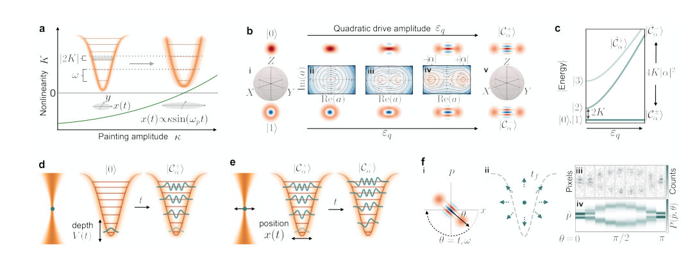
<figcaption class="paper-figure-caption"><b>Fig 1.</b> Figure 1: Motional Kerr-cat state preparation and tomography in optical tweezers. a, Kerr nonlinearity 𝐾versus painting amplitude 𝜅in a tweezer with trap frequency 𝜔. All parameters are defined along the 𝑥-dimension of the tweezer, where (𝑥, 𝑦) and 𝑧denote the radial and axial dimensions, respectively. Modulation of the trap position at a frequency 𝜔𝑝≫𝜔(painting) and amplitude 𝜅enables dynamic tuning of the anharmonicity 2𝐾between the intrinsic Gaussian value and the harmonic limit. Shaded ellipses indicate the trap waist in 𝑥and 𝑦. b, Adiabatic Kerr-cat preparation. An initially prepared Fock state |0⟩or |1⟩(i) is transformed into an even- or odd-parity Kerr-cat state |C+ 𝛼⟩and |C− 𝛼⟩(v)...</figcaption>
</figure>
<figure class="paper-figure-card">
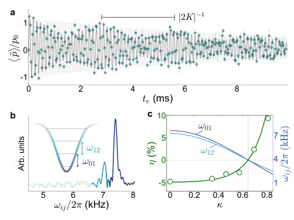
<figcaption class="paper-figure-caption"><b>Fig 2.</b> Figure 2: Tuning and measuring Kerr nonlinearity in an optical tweezer. a, Momentum expectation value ⟨˜𝑝⟩/𝑝0, where 𝑝0 = √︁</figcaption>
</figure>
<figure class="paper-figure-card">
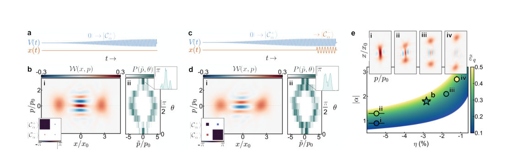
<figcaption class="paper-figure-caption"><b>Fig 3.</b> Figure 3: | Motional Kerr-cat states of a single atom. a,c, Pulse sequences for preparing even- and odd-parity cat states |C± 𝛼⟩. An adiabatic, frequency-chirped modulation of the trap depth 𝑉(𝑡) transfers an atom from its motional ground state |0⟩to |C+ 𝛼⟩(a). Subsequent modulation of the trap position 𝑥(𝑡) rotates |C+ 𝛼⟩to |C− 𝛼⟩(c). b,d, Tomographic reconstruction of |C+ 1.8⟩(b) and |C− 1.8⟩(d) indicate state fidelities 94.4+2.9 −2.7% and 74.8+1.9 −1.9%, respectively (uncertainties are 68.2% bootstrap confidence intervals). Corresponding Wigner functions (i) and Hinton plots (insets in i) are reconstructed from TOF quadrature distribution measurements ˜𝑝/𝑝0 (ii). The interference fringes...</figcaption>
</figure>
<figure class="paper-figure-card">
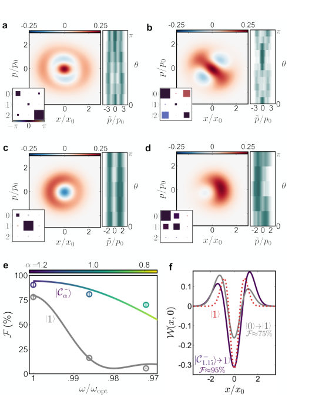
<figcaption class="paper-figure-caption"><b>Fig 4.</b> Figure 4: Fock-state control with tweezer depth and position modulation. a,b,c,d, Wigner functions, Hinton plots, and TOF quadrature measurements for motional Fock states |2⟩(a), ∝|0⟩+ |2⟩ (b), |1⟩(c), and ∝|0⟩+ |1⟩(d), prepared via modulation of the tweezer depth (a,b) or position (c,d). Superposition states are prepared with ∼1/2 of the pulse amplitude and approximately the same pulse time used for |2⟩and |1⟩. e, State fidelity F of |1⟩and |C− 𝛼⟩as a function of fractional trap frequency 𝜔/𝜔opt. Circles indicate experimental data while lines are simulated (see Methods). f, Cross- sections of the Wigner functions W(𝑥, 𝑝= 0) for the state |1⟩in panel (c) prepared by applying a linear drive...</figcaption>
</figure>
<figure class="paper-figure-card">
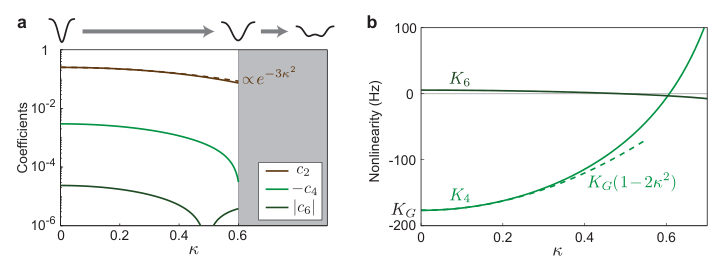
<figcaption class="paper-figure-caption"><b>Fig 5.</b> Figure 5: Tunable Kerr nonlinearity in the painted trap. a, Coefficients 𝑐2, 𝑐4, 𝑐6 of the painted potential (Eq. 8) as functions of the painting amplitude 𝜅. As 𝜅increases, the original Gaussian potential becomes nearly harmonic around 𝜅≈0.6 and evolves toward a double-well potential for larger 𝜅(shaded region). b, Nonlinearities 𝐾4 and 𝐾6 derived from the coefficients in (a). Here, the trap frequency is held constant by increasing the trap depth.</figcaption>
</figure>
</div>

<p><strong>Summary.</strong> The research demonstrates the creation and control of Schrödinger cat states in the quantized motion of an atom trapped by an optical tweezer. They exploit the intrinsic Kerr nonlinearity of the trap potential, establishing a novel method for non-Gaussian state engineering. This work is significant because it provides a robust platform for generating complex quantum resources needed for advanced quantum computing applications.</p>
<p><strong>Why it may be interesting.</strong> This work directly addresses non-Gaussian quantum state engineering in a leading platform (optical tweezers), providing robust methods for generating resources relevant to quantum error correction codes and enhanced sensing.</p>
<details>
<summary>Detailed structure</summary>
<p><strong>Main problem.</strong> The primary goal is realizing and controlling Schrödinger cat states using the motional degrees of freedom of a single neutral atom trapped in an optical tweezer.</p>
<p><strong>Main result.</strong> The authors successfully demonstrated the generation and parity control of Kerr-cat and Fock states, establishing a new paradigm for non-Gaussian state engineering in optical tweezers.</p>
<p><strong>Method.</strong> State preparation involves adiabatically modulating trap depth and position (painting) to tune the intrinsic self-Kerr nonlinearity, followed by time-of-flight quantum-state tomography for measurement.</p>
<p><strong>Model / system.</strong> The system is a neutral atom trapped in an optical tweezer potential. The key mechanism exploited is the intrinsic Kerr nonlinearity arising from the anharmonicity of the Gaussian trapping potential, which allows for cat-state generation without external nonlinear elements.</p>
<p><strong>Key observables.</strong> State fidelity ($F$), Cat size ($\alpha$), momentum quadratures ($\langle	ilde{p}
angle/p_0$), and tunable Kerr nonlinearity coefficients ($c_2, c_4, c_6$).</p>
<p><strong>Important parameters / regimes.</strong> Trap frequency ($\omega$), anharmonicity parameter ($\eta$), modulation amplitudes ($\epsilon_q, \epsilon_l$), and evolution time ($t_e$).</p>
<p><strong>Assumptions / limitations.</strong> The dynamics are assumed to remain effectively one-dimensional when modulating along a single axis (the $x$-dimension).</p>
<p><strong>Figures summary.</strong> Figures illustrate the process of cat state generation via adiabatic passage, show the dependence of observables on painting amplitude ($\kappa$), and detail TOF tomography setups.</p>
<p><strong>Paper structure.</strong> The paper details the theoretical framework using an effective Hamiltonian incorporating Kerr nonlinearity, presents experimental protocols for preparing even/odd parity cat states through controlled modulation, and validates results using high-fidelity state characterization via TOF measurements.</p>
</details>
<details>
<summary>Abstract</summary>
<p>Schrödinger cat states - quantum superpositions of classically or macroscopically distinct states - constitute a powerful resource for quantum computing, enhanced metrology, and probing coherence on large scales. Encoding such states in the phase space of an oscillator requires a nonlinearity, typically inherited from an auxiliary degree of freedom such as atomic spin or a Josephson junction. Neutral atoms trapped in reconfigurable optical tweezer arrays - a leading platform for quantum science and computing - provide an intrinsic nonlinearity via the motion of a single atom in a tightly focused trap. However, this self-Kerr mechanism has not previously been exploited for cat-state generation, and remains largely unexplored as a resource for motional-state control. Here we realize Schrödinger cat states in the quantized motion of a single neutral atom trapped in an optical tweezer. By modulating the depth and position, we demonstrate parity control of both Kerr-cat and Fock states alongside tunable nonlinearity, establishing a spin- and species-independent framework for controlling motion. We further show that the cat-state encoding is intrinsically robust against trap-frequency fluctuations that otherwise limit the fidelity of direct Fock-state transitions. These results establish Kerr-based control of neutral-atom motion as a new paradigm for cat-state and bosonic-state engineering in optical tweezers, providing a route toward quantum-error-correcting codes such as grid states, and toward quantum-enhanced sensing with arrays of non-Gaussian states.</p>
</details>
<p><sub><a href="#top">↑ back to top</a></sub></p>

<p><a id="paper-2607.19154"></a></p>
<h3 id="nonlinear-response-via-sublinear-optics">⭐ <a href="http://arxiv.org/abs/2607.19154v1">Nonlinear Response via Sublinear Optics</a></h3>
<p><strong>Highlighted author(s):</strong> Denys I. Bondar<br>
<strong>Authors:</strong> Mykhaylo Khoma, Valeriia Bilokon, Elvira Bilokon, Denys I. Bondar<br>
<strong>Type:</strong> theory · <strong>Category:</strong> other · <strong>PDF:</strong> <a href="https://arxiv.org/pdf/2607.19154v1">https://arxiv.org/pdf/2607.19154v1</a><br>
<strong>Analysis basis:</strong> full PDF text, analyzed in chunks
<strong>Topic relevance:</strong> 🔥 <code>quantum measurements</code> <strong>4/5</strong> · <code>measurement-induced transitions</code> <strong>3/5</strong> · <code>methods for driven-dissipative</code> <strong>3/5</strong> · <code>non-equilibrium dynamics</code> <strong>2/5</strong> · <code>Keldysh / 2PI / non-Gaussian methods</code> <strong>1/5</strong> · <code>driven-dissipative phase transition</code> <strong>1/5</strong></p>
<div class="figure-strip-hint">↔ Scroll figures horizontally</div>
<div class="paper-figures-scroll">
<figure class="paper-figure-card">
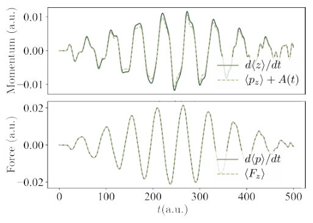
<figcaption class="paper-figure-caption"><b>Fig 1.</b> FIG. 2. Numerical verification of the Ehrenfest theorems. The left- and right-hand sides of the two Ehrenfest relations, d dt⟨z⟩= ⟨pz⟩+A(t) (top) and d dt⟨p⟩= ⟨Fz⟩(bottom), are com- puted independently from the simulated wave function and plotted as functions of time. The near-perfect overlap of the two curves in each panel indicates that the finite-dimensional representation used here introduces only a negligible violation of the Ehrenfest theorems, confirming the physical reliability of the simulation. See Ref. [45] for computational details.</figcaption>
</figure>
<figure class="paper-figure-card">
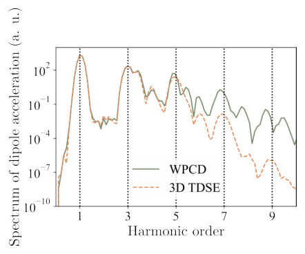
<figcaption class="paper-figure-caption"><b>Fig 2.</b> FIG. 1. Power spectrum of the dipole acceleration for hy- drogen driven by a 400 nm Gaussian pulse (E0 = 0.02 a.u. Ncycles = 10), computed with the WPCD basis (solid green; Lmax = 6, 60 continuum bins) and a state-of-the-art 3D TDSE calculation (dashed orange) [44]. Vertical dotted lines mark odd harmonics.</figcaption>
</figure>
<figure class="paper-figure-card">
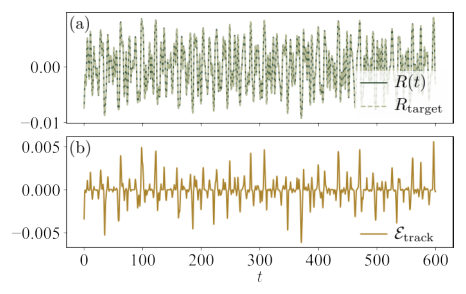
<figcaption class="paper-figure-caption"><b>Fig 3.</b> FIG. 3. Tracking control for a cube-root response with ν = 3, α = 0.03 [Eq. (5)]. (a) Dipole acceleration d⟨pz⟩/dt (solid) and the prescribed target Rtarget(t) = 0.03 E1/3 (dashed). (b) The tracking field Etrack(t) produced by the algorithm.</figcaption>
</figure>
<figure class="paper-figure-card">
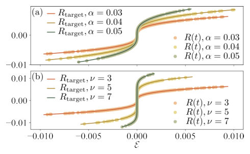
<figcaption class="paper-figure-caption"><b>Fig 4.</b> FIG. 4. Achieved response R versus tracking field Etrack. Dots show the achieved response at each time step; solid curves show the target power law defined in Eq. (5). (a) Fixed ν = 3, varying α = 0.03, 0.04, 0.05. (b) Fixed α = 0.03, varying ν = 3, 5, 7. All simulations use the same WPCD basis and initial-state preparation.</figcaption>
</figure>
</div>

<p><strong>Summary.</strong> The paper demonstrates a novel method using tracking control to force an atomic system (hydrogen) into exhibiting sublinear optical response scaling. By self-consistently determining the driving field based on a target power law, they prove that such non-perturbative nonlinearities can be engineered in quantum systems. This establishes tracking control as a general tool for designing exotic light-matter interactions.</p>
<p><strong>Why it may be interesting.</strong> This work provides a general theoretical framework—tracking control—to engineer complex optical responses in quantum systems beyond simple polynomial nonlinearities, which is highly relevant for advanced quantum optics and light-matter interaction studies.</p>
<details>
<summary>Detailed structure</summary>
<p><strong>Main problem.</strong> The research aims to engineer optical responses that exhibit sublinear scaling, which falls outside the standard perturbative framework of nonlinear optics.</p>
<p><strong>Main result.</strong> The authors successfully demonstrate that a quantum system can be driven using tracking control to realize prescribed sublinear optical responses in hydrogen atoms.</p>
<p><strong>Method.</strong> They employ a self-consistent tracking control loop where the driving field is determined by enforcing a desired relationship between the measured dipole acceleration and the applied field.</p>
<p><strong>Model / system.</strong> The system modeled is a hydrogen atom interacting with an intense, linearly polarized laser field. The calculations utilize a specialized Wave-Packet Continuum Discretization (WPCD) basis that treats both bound and continuum states equally.</p>
<p><strong>Key observables.</strong> Dipole acceleration ($d\langle p_z 
angle / dt$), High-Harmonic Generation (HHG) spectrum, and the tracking field $E(t)$.</p>
<p><strong>Important parameters / regimes.</strong> The target response is defined by a power law $R_{  ext{target}}(t) = \alpha    ext{sgn}(E)|E(t)|^{1/
u}$, where $
u &gt; 1$.</p>
<p><strong>Assumptions / limitations.</strong> The primary approximations involve the finite continuum discretization and angular-momentum truncation ($L_{\max} = 6$) when comparing to full TDSE calculations.</p>
<p><strong>Figures summary.</strong> Figure 1 compares HHG spectra from WPCD vs. state-of-the-art TDSE; Figure 2 verifies Ehrenfest theorems; Figure 3 shows the achieved dipole acceleration tracking a prescribed sublinear target response.</p>
<p><strong>Paper structure.</strong> The paper introduces the problem of non-perturbative nonlinear optics, details the WPCD methodology for strong-field calculations, and then implements the self-consistent tracking control algorithm to force the system into a desired sublinear power-law response.</p>
</details>
<details>
<summary>Abstract</summary>
<p>Sublinear optical response, in which the emitted field scales as a fractional power of the driving field, lies beyond the conventional perturbative hierarchy of nonlinear optics. Here, we show that such a response can be engineered in a hydrogen atom using tracking control. Rather than prescribing the driving waveform, the field is determined self-consistently from the evolving quantum state to enforce a chosen relation between the optical response and the applied field. We demonstrate accurate tracking for multiple exponents and scaling strengths, establishing that a single atomic system can be driven to realize a family of distinct sublinear responses. The calculations are enabled by a compact wave-packet continuum discretization that treats bound and continuum states on equal footing and is applied here, to the best of our knowledge, for the first time to strong-field optics and quantum control. These results establish tracking control as a general route to engineering optical responses beyond conventional polynomial nonlinearities.</p>
</details>
<p><sub><a href="#top">↑ back to top</a></sub></p>

<p><a id="paper-2607.19328"></a></p>
<h3 id="quantum-synchronization">⭐ <a href="http://arxiv.org/abs/2607.19328v1">Quantum Synchronization</a></h3>
<p><strong>Highlighted author(s):</strong> Igor Lesanovsky, Rosario Fazio<br>
<strong>Authors:</strong> Parvinder Solanki, Albert Cabot, Fernando Iemini, Federico Carollo, Midhun Krishna, Yeshma Ibrahim, Michal Hajdušek, Igor Lesanovsky, Rosario Fazio, Roberta Zambrini, Sai Vinjanampathy<br>
<strong>Type:</strong> theory · <strong>Category:</strong> other · <strong>PDF:</strong> <a href="https://arxiv.org/pdf/2607.19328v1">https://arxiv.org/pdf/2607.19328v1</a><br>
<strong>Analysis basis:</strong> full PDF text, analyzed in chunks
<strong>Topic relevance:</strong> <code>driven-dissipative phase transition</code> <strong>3/5</strong> · <code>methods for driven-dissipative</code> <strong>3/5</strong> · <code>Keldysh / 2PI / non-Gaussian methods</code> <strong>2/5</strong> · <code>non-equilibrium dynamics</code> <strong>2/5</strong> · <code>non-equilibrium universality</code> <strong>2/5</strong> · <code>analog quantum simulation</code> <strong>1/5</strong> · <code>correlated / nonlocal dissipation</code> <strong>1/5</strong> · <code>measurement-induced transitions</code> <strong>1/5</strong> · <code>quantum measurements</code> <strong>1/5</strong></p>
<div class="figure-strip-hint">↔ Scroll figures horizontally</div>
<div class="paper-figures-scroll">
<figure class="paper-figure-card">
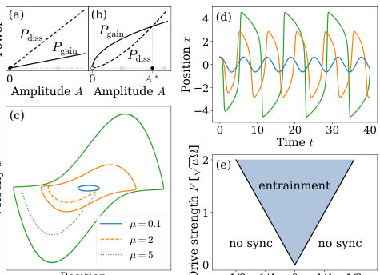
<figcaption class="paper-figure-caption"><b>Fig 1.</b> FIG. 1 (a) Linear systems cannot support self-sustaining os- cillations. For these systems, the only fixed point for the amplitude is A∗= 0. (b) Non-linear systems, on the other hand, can support non-trivial stable amplitudes. (c) Increas- ing the non-linearity µ in Eq. (1) results in limit cycles that further deviate from harmonic (elliptical) trajectories. This is clearly observed from the time series for the position of the van der Pol oscillator in (d). (e) Arnold tongue marking the parameter region where a driven vdP becomes entrained.</figcaption>
</figure>
<figure class="paper-figure-card">
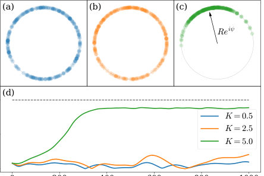
<figcaption class="paper-figure-caption"><b>Fig 2.</b> FIG. 2 Time evolution of the Kuramoto model for N = 250 phase oscillators. Initial phases are picked uniformly at ran- dom, ϕi(0) ∈[0, 2π). Natural frequencies ωi are also cho- sen uniformly at random, ωi ∈[0, 2]. The top three panels show the phase distributions of the oscillators in the long time limit. For coupling strength below the critical value, namely K = 0.5 in (a) and K = 2.5 in (b), the oscillators remain unsynchronized. For K = 5.0, which is above the crit- ical coupling strength, the oscillators develop strong mutual synchronization as shown in (c). The black arrow shows the complex order parameter Reiψ from Eq. (11). (d) Time evo- lution of the magnitude of the order...</figcaption>
</figure>
<figure class="paper-figure-card">
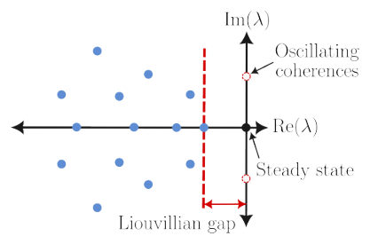
<figcaption class="paper-figure-caption"><b>Fig 3.</b> FIG. 3 Illustration of the eigenvalue spectrum of a generic Liouvillian superoperator.</figcaption>
</figure>
<figure class="paper-figure-card">
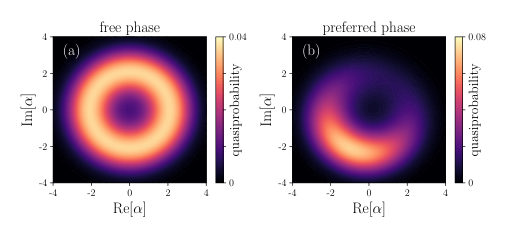
<figcaption class="paper-figure-caption"><b>Fig 4.</b> FIG. 4 Signatures of entrainment in a driven QvdP oscillator. Wigner distribution of the stationary state for ∆/γ1 = 0.1, γ2/γ1 = 0.25, (a) F/γ1 = 0 and (b) F/γ1 = 0.25.</figcaption>
</figure>
<figure class="paper-figure-card">
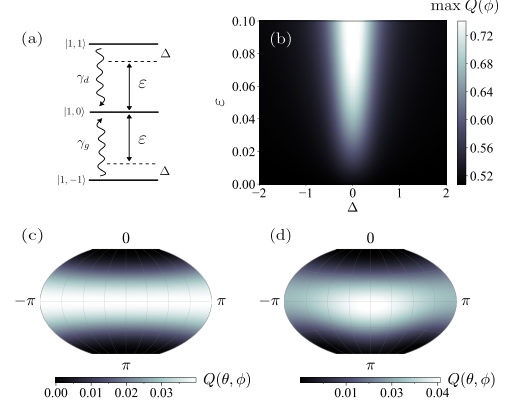
<figcaption class="paper-figure-caption"><b>Fig 5.</b> FIG. 5 (a) A schematic representation of a driven qutrit. ε is the strength of the external drive, ∆is the detuning between the natural frequency of the oscillator and the external drive, and γg, γd denote the gain and dissipation rates respectively. (b) The synchronization measure given by the Husimi-Q func- tion shows an Arnold tongue-like behavior, indicating that the system synchronizes for a wider range of detuning for higher coupling strengths. The Husimi-Q function is plotted in the steady state using a Winkel tripel earth projection for (c) γg/γd = 0.1, ε = 0, (d) γg/γd = 0.1, ε = 0.1γg.</figcaption>
</figure>
</div>

<p><strong>Summary.</strong> This review surveys the concept of synchronization, extending established ideas from classical oscillators (like the van der Pol model) to quantum many-body systems. It details various mathematical measures and techniques needed to quantify this phenomenon in open quantum settings. The work is important for understanding stability and coherence in emerging quantum technologies.</p>
<p><strong>Why it may be interesting.</strong> This is highly relevant as it bridges nonlinear dynamics from classical physics into the realm of open quantum systems, providing theoretical tools to analyze stability and coherence in complex quantum devices.</p>
<details>
<summary>Detailed structure</summary>
<p><strong>Main problem.</strong> The review aims to establish a quantum analogue of classical synchronization, which is crucial for understanding stability in both natural and engineered systems.</p>
<p><strong>Main result.</strong> Synchronization phenomena can be studied by adapting concepts from nonlinear classical oscillators (like the van der Pol model) into the quantum domain using advanced measurement techniques.</p>
<p><strong>Method.</strong> The review surveys theoretical methods including analyzing open quantum system dynamics via master equations, phase reduction, and measuring various quantum correlations.</p>
<p><strong>Model / system.</strong> The scope covers synchronization in both few-body and many-body quantum systems. Classical analogies are drawn from self-sustained oscillators (like the vdP oscillator), which require nonlinearity to maintain non-zero steady amplitudes via energy balance ($P_{	ext{gain}} = P_{	ext{diss}}$).</p>
<p><strong>Key observables.</strong> Temporal correlations, quantum correlations, phase &amp; frequency locking, and the steady amplitude $A^*$ determined by power balance.</p>
<p><strong>Important parameters / regimes.</strong> Detuning ($\Delta$) and drive strength ($F$), which define parameter regions (Arnold tongues) where synchronization occurs.</p>
<p><strong>Assumptions / limitations.</strong> The analysis of entrainment often relies on approximations such as assuming weak non-linearity or slow variation in amplitude and phase to allow for averaging techniques.</p>
<p><strong>Figures summary.</strong> Figures illustrate the failure of linear systems to sustain oscillations, the existence of stable limit cycles in nonlinear systems (vdP), and parameter diagrams showing regions of frequency locking (Arnold tongues).</p>
<p><strong>Paper structure.</strong> The review progresses logically: first introducing classical synchronization concepts, then detailing necessary quantum techniques for study, followed by specific applications across few-body and many-body quantum systems.</p>
</details>
<details>
<summary>Abstract</summary>
<p>Natural and engineered classical systems are replete with examples of synchronization, understood as the adjustment of rhythms of physical systems. Such synchronization is at the heart of the stability of several classical technologies, such as mechanical bridges and electrical networks. Given the advent of quantum simulation and computation technologies, it is natural to study a quantum analogue of synchronization and explore novel applications. This review surveys synchronization in few and many-body quantum systems, measures that quantify them, and their applications to quantum technologies.</p>
</details>
<p><sub><a href="#top">↑ back to top</a></sub></p>

<p><a id="paper-2607.19166"></a></p>
<h3 id="boundary-quenches-in-11-dimensional-conformal-field-theory"><a href="http://arxiv.org/abs/2607.19166v1">Boundary quenches in (1+1)-dimensional conformal field theory</a></h3>
<p><strong>Authors:</strong> Michele Fossati, Colin Rylands, Eytan Grosfeld, Eran Sela, Pasquale Calabrese<br>
<strong>Type:</strong> theory · <strong>Category:</strong> statistical mechanics · <strong>PDF:</strong> <a href="https://arxiv.org/pdf/2607.19166v1">https://arxiv.org/pdf/2607.19166v1</a><br>
<strong>Analysis basis:</strong> full PDF text, analyzed in chunks
<strong>Topic relevance:</strong> 🔥 <code>non-equilibrium dynamics</code> <strong>5/5</strong> · 🔥 <code>entanglement &amp; information structure</code> <strong>4/5</strong> · 🔥 <code>non-equilibrium universality</code> <strong>4/5</strong> · <code>methods for driven-dissipative</code> <strong>3/5</strong> · <code>driven-dissipative phase transition</code> <strong>2/5</strong> · <code>Keldysh / 2PI / non-Gaussian methods</code> <strong>1/5</strong> · <code>correlated / nonlocal dissipation</code> <strong>1/5</strong></p>
<div class="figure-strip-hint">↔ Scroll figures horizontally</div>
<div class="paper-figures-scroll">
<figure class="paper-figure-card">
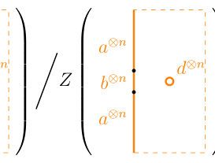
<figcaption class="paper-figure-caption"><b>Fig 1.</b> Figure 3: The analytic continuation to euclidean time of (2.16), expressed in terms of partition functions of the n-replicated CFT.</figcaption>
</figure>
<figure class="paper-figure-card">
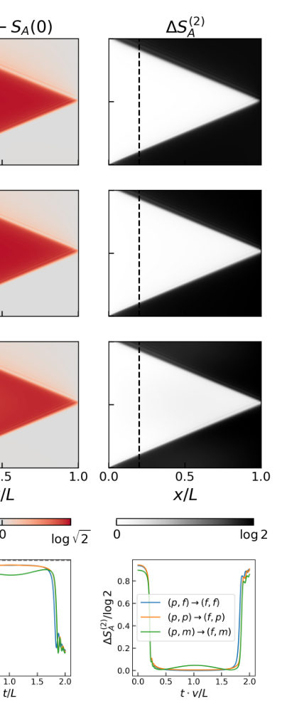
<figcaption class="paper-figure-caption"><b>Fig 2.</b> Figure 4: Top: Space-time plot of the quench (+, b) →(f, b). Every row is a different quench, where b is fixed respectively to f, +, −. Columns are respectively: magnetization, jump in the entanglement entropy, second R´enyi asymmetry on A = [0, x]. The predicted light-cone behavior is observed in the magnetization and in the entanglement entropy. Bottom: The same observables, on a fixed site at x/L = 1/5 (dashed line in top figures), as a function of time.</figcaption>
</figure>
<figure class="paper-figure-card">
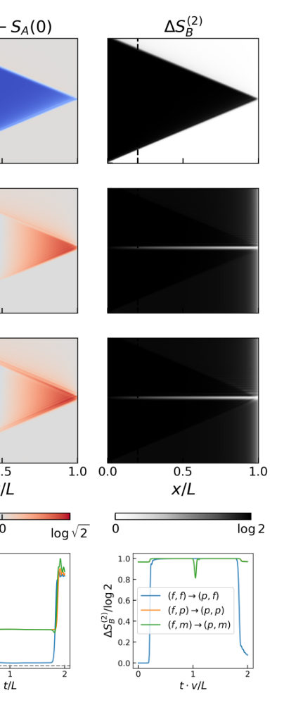
<figcaption class="paper-figure-caption"><b>Fig 3.</b> Figure 5: Top: Space-time plots of the quench (f, b) →(+, b). Every row is a different quench, where b is fixed respectively to f, +, −. Columns are respectively: magnetization, jump in the entanglement entropy, second R´enyi asymmetry on the right subsystem B = [x, L]. Bottom: The same observables, on a fixed site at x/L = 1/5 (dashed line in top figures), as a function of time.</figcaption>
</figure>
<figure class="paper-figure-card">
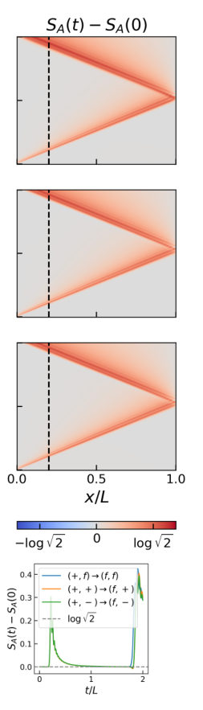
<figcaption class="paper-figure-caption"><b>Fig 4.</b> Figure 6: Top: Spacetime plot for the (+, b) →(−, b) quench. Every row is a different quench, where b is fixed respectively to f, +, −. Columns display magnetization and variation in the entanglement entropy. Bottom: The same observables, on a fixed site at x/L = 1/5 (dashed line in top figures), as a function of time .</figcaption>
</figure>
</div>

<p><strong>Summary.</strong> This paper analyzes how local perturbations affect a 1+1 dimensional CFT when its boundary conditions are suddenly changed. The authors derive universal analytical results showing that the entanglement entropy jumps by $\log(g_b/g_a)$ at the quench front. By comparing these predictions with MPS simulations of the Ising model, they establish a direct link between non-equilibrium entanglement dynamics and boundary critical physics.</p>
<p><strong>Why it may be interesting.</strong> This work provides a powerful theoretical framework connecting non-equilibrium quantum dynamics (quenches) directly to fundamental concepts like boundary critical phenomena and entanglement structure, which has implications for understanding open quantum systems.</p>
<details>
<summary>Detailed structure</summary>
<p><strong>Main problem.</strong> The study investigates the non-equilibrium dynamics resulting from abruptly changing the boundary conditions of a (1+1)-dimensional Conformal Field Theory (CFT). This addresses how local perturbations propagate across the system's boundary.</p>
<p><strong>Main result.</strong> The entanglement entropy undergoes a sharp, universal finite jump of magnitude $\log(g_b/g_a)$ when the subsystem becomes causally connected to the quench event. The time evolution of one-point functions also exhibits simple, universal behavior.</p>
<p><strong>Method.</strong> The authors use analytical derivations based on mapping correlation functions and entanglement entropy calculations onto ratios of partition functions in replicated CFT geometries. These predictions are rigorously benchmarked against Matrix Product State (MPS) simulations.</p>
<p><strong>Model / system.</strong> The system is a (1+1)-dimensional CFT defined on a half-line, initially prepared in a ground state with boundary condition $a$, and then quenched to a final boundary condition $b$. The critical Ising spin chain serves as the primary physical realization used for numerical benchmarking.</p>
<p><strong>Key observables.</strong> One-point functions $\langle \hat{O}(x) 
angle_t$, Entanglement Entropy $S_A(t)$, and Spin-flip entanglement asymmetry.</p>
<p><strong>Important parameters / regimes.</strong> The boundary g-factors ($g_a, g_b$), the quench time/distance relative to light-cone structure, and the limit $\epsilon 	o 0$ for analytic continuation.</p>
<p><strong>Assumptions / limitations.</strong> The analysis assumes the existence of a simple boundary changing operator ($\hat{\phi}$) and relies on mapping non-equilibrium dynamics to ratios of partition functions in CFTs.</p>
<p><strong>Figures summary.</strong> Figure 1 illustrates the Euclidean path-integral preparation of the initial state. Figure 2 shows the relevant geometries (M and H) for time evolution calculations, while Figure 3 relates entanglement entropy calculation to replicated CFT geometries.</p>
<p><strong>Paper structure.</strong> The paper proceeds by first deriving analytical expressions for one-point functions in the semi-infinite geometry under boundary quenches. It then extends this analysis to calculate the time evolution of entanglement entropy using Rényi formalism, culminating in numerical verification against MPS simulations for the Ising model.</p>
</details>
<details>
<summary>Abstract</summary>
<p>We investigate a class of local quantum quenches in which the conformal boundary condition of a (1+1)-dimensional conformal field theory is abruptly changed. We derive a remarkably simple and universal expression for the time evolution of one-point functions on the half-line. This result provides a direct description of the propagation of the disturbance generated by the quench and, in turn, allows us to determine the dynamics of bipartite entanglement for subsystems adjacent to the boundary. We show that, once the subsystem becomes fully causally connected to the quench event, the entanglement entropy undergoes a sharp finite jump whose magnitude is universally given by the logarithm of the ratio of the boundary g-factors associated with the initial and final boundary conditions. We benchmark these analytical predictions against Matrix Product State simulations of the critical Ising spin chain, finding excellent agreement. The numerical analysis further allows us to investigate the time evolution of the spin-flip entanglement asymmetry, revealing how the symmetry-breaking perturbation emitted from the boundary propagates through the system. Our results uncover universal dynamical signatures of boundary quenches and establish a direct connection between nonequilibrium entanglement dynamics and boundary critical phenomena.</p>
</details>
<p><sub><a href="#top">↑ back to top</a></sub></p>

<p><a id="paper-2607.18902"></a></p>
<h3 id="collective-coherent-perfect-absorption-in-a-synthetic-photon-phonon-lattice"><a href="http://arxiv.org/abs/2607.18902v1">Collective Coherent Perfect Absorption in a Synthetic Photon-Phonon Lattice</a></h3>
<p><strong>Authors:</strong> Sihan Wang, Qichun Liu, Bo Song, Qiongyi He, Jingwei Zhou, Yulong Liu<br>
<strong>Type:</strong> experiment · <strong>Category:</strong> other · <strong>PDF:</strong> <a href="https://arxiv.org/pdf/2607.18902v1">https://arxiv.org/pdf/2607.18902v1</a><br>
<strong>Analysis basis:</strong> full PDF text, analyzed in chunks
<strong>Topic relevance:</strong> 🔥 <code>analog quantum simulation</code> <strong>4/5</strong> · 🔥 <code>correlated / nonlocal dissipation</code> <strong>4/5</strong> · 🔥 <code>correlated cavity matter</code> <strong>4/5</strong> · 🔥 <code>non-equilibrium dynamics</code> <strong>4/5</strong> · <code>driven-dissipative phase transition</code> <strong>3/5</strong> · <code>interference shaping light</code> <strong>3/5</strong> · <code>methods for driven-dissipative</code> <strong>3/5</strong> · <code>quantum optics experiment</code> <strong>3/5</strong> · <code>Tavis-Cummings &amp; cavity-many-emitter</code> <strong>2/5</strong> · <code>non-equilibrium universality</code> <strong>2/5</strong> · <code>Dicke superradiance</code> <strong>1/5</strong> · <code>Keldysh / 2PI / non-Gaussian methods</code> <strong>1/5</strong> · <code>entanglement &amp; information structure</code> <strong>1/5</strong></p>
<div class="figure-strip-hint">↔ Scroll figures horizontally</div>
<div class="paper-figures-scroll">
<figure class="paper-figure-card">
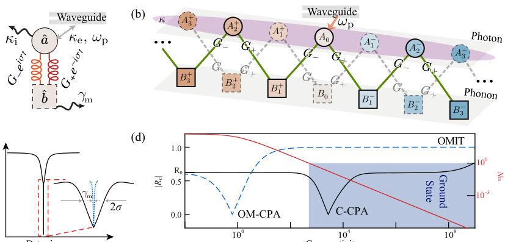
<figcaption class="paper-figure-caption"><b>Fig 1.</b> FIG. 1. (a) Schematic of the Floquet-engineered optomechanical coupling. (b) Equivalent multimode coupling chain, where A± n and B± n denote the photonic and phononic Floquet sites, respectively. The purple shaded region denotes the common cavity thermal reservoir with decay rate κ. (c) Typical C–CPA curve in the reflection spectrum, with the inset highlighting the detailed lineshape determined by the offset σ. The blue dashed curve denotes the corresponding OM-CPA response for comparison. (d) Dependence of |Rc| and the effective phonon number Nm on the cooperativity. The black curve denotes collectively photon-phonon interference induced absorption, whereas the blue dashed line corresponds...</figcaption>
</figure>
<figure class="paper-figure-card">
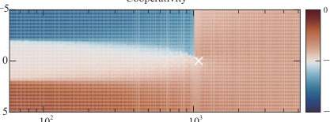
<figcaption class="paper-figure-caption"><b>Fig 2.</b> FIG. 2. (a) Measured (left) and simulated (right) resonance reflection amplitude |Rc| at resonance as a function of coop- erativities C+ and C−. Black dashed line denotes the base- line reflection |Rc| = R0. (b) Measured (left) and simulated (right) wrapped reflection phase φc as a function of C+ and C−. Black dashed lines indicate φc = 0 and φc = ±π. (c) The reflection amplitude as a function of cooperativity, show- ing the continuous variation and spectral dips merging. The white dotted line marks the location of dips. (d) The reflec- tion phase as a function of cooperativity. The pronounced phase step observed prior to C-CPA collapses into a degen- eracy at the C-CPA point. White crosses...</figcaption>
</figure>
<figure class="paper-figure-card">
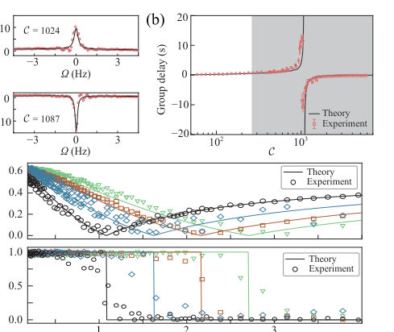
<figcaption class="paper-figure-caption"><b>Fig 3.</b> FIG. 4. (a) Measured group delay τ(Ω) as a function of fre- quency detuning Ωfor two representative cooperativities near the C-CPA. (b) Group delay at the cavity resonance as a func- tion of cooperativity C. The gray-shaded region indicates the ground state regime with Nm &lt; 1. Error bars represent the standard error of the mean from repeated measurements. (c) Dependence of amplitude |Rc| and phase φc on the cooper- ativity C for different modulation frequencies σ. Results are shown for σ/2π = 2 (black circles), 3 (blue diamonds), 4 (or- ange squares), and 5 (green triangles) Hz.</figcaption>
</figure>
<figure class="paper-figure-card">
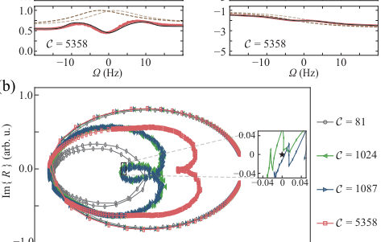
<figcaption class="paper-figure-caption"><b>Fig 4.</b> FIG. 3. (a) Four characteristic regions of the reflection spectrum and phase. Red circles represent the experimental results of collective interference, the black solid line represents the theoretical results, and the dashed line indicates the ex- perimental results for the effect of C± acting individually. This corresponds to σ/2π = 2 Hz. In the subpanel corresponding to C = 1087, the blue dashed line highlights the π-phase tran- sition at Ω= 0. (b) Complex-plane plots of the real and imaginary parts of R. The winding number abruptly changes from 2 to 1 after the system passes through the CPA singu- larity, where non-closed cavity trajectories are neglected. An inset highlights the change...</figcaption>
</figure>
</div>

<p><strong>Summary.</strong> The paper reports experimental evidence for collective coherent perfect absorption (C-CPA) in a synthetic photon-phonon lattice. By utilizing long-range interactions, the authors shift the CPA condition into the high-cooperativity regime. This breakthrough allows for quantum-compatible light control, enabling both perfect absorption and ground-state cooling of the mechanical oscillator simultaneously.</p>
<p><strong>Why it may be interesting.</strong> This work is highly relevant to AMO physics as it pushes the boundaries of cavity QED and optomechanics by engineering a platform that achieves fundamental quantum control (ground-state cooling) while simultaneously realizing advanced light manipulation phenomena (CPA).</p>
<details>
<summary>Detailed structure</summary>
<p><strong>Main problem.</strong> The primary challenge is achieving Coherent Perfect Absorption (CPA) in a regime compatible with quantum mechanics, overcoming limitations where conventional optomechanical CPA restricts operation to the weak-cooperativity regime and leaves the mechanical oscillator thermally excited.</p>
<p><strong>Main result.</strong> The authors demonstrate collective interference-induced CPA (C-CPA), which shifts the absorption condition into the high-cooperativity regime. This allows for simultaneous ground-state cooling of the mechanical oscillator alongside perfect absorption, enabling long-lived quantum storage.</p>
<p><strong>Method.</strong> The study uses a Floquet description to model the synthetic photon-phonon lattice and calculates the reflection coefficient by summing over all lattice sites using susceptibilities.</p>
<p><strong>Model / system.</strong> The physical system is a synthetic photon–phonon lattice realized via time-dependent optomechanical couplings, modeled using an effective non-Hermitian Hamiltonian ($\hat{H}_{	ext{lat}}$) in Floquet space. The interaction involves cavity and mechanical dissipation rates.</p>
<p><strong>Key observables.</strong> Reflection coefficient ($R$), group delay response ($   au$), and the effective phonon number ($N_m$).</p>
<p><strong>Important parameters / regimes.</strong> Cooperativity ($C = 4|G|^2/(\kappa\gamma_m)$), which is tuned to reach the high-cooperativity regime ($C \gg 1$).</p>
<p><strong>Assumptions / limitations.</strong> The analysis focuses on the resonant condition ($\Omega=0$) and assumes operation in the overcoupled regime ($\eta > 1/2$) for efficient lattice excitation.</p>
<p><strong>Figures summary.</strong> Figures illustrate the schematic of Floquet engineering, the resulting C-CPA curve showing non-Lorentzian absorption, and plots detailing the reflection amplitude and phase evolution across different cooperativities, highlighting the transition to collective absorption at $\Omega=0$.</p>
<p><strong>Paper structure.</strong> The paper first introduces CPA and its limitations in standard optomechanics. It then details the theoretical framework using Floquet engineering for the synthetic lattice. The core of the work presents experimental measurements demonstrating C-CPA, showing how high cooperativity enables quantum-compatible absorption features like ground-state cooling and long group delays.</p>
</details>
<details>
<summary>Abstract</summary>
<p>Coherent perfect absorption (CPA) has emerged as a powerful paradigm for controlling classical and quantum light, and has been demonstrated across a broad range of physical platforms. CPA realized in optomechanics relies on interference between the input field and the mechanically scattered field, but is intrinsically confined to the weak-cooperativity regime, resulting in a narrow absorption bandwidth and the mechanical mode remains thermally occupied. Here, we experimentally demonstrate collective interference-induced CPA in a synthetic photon--phonon lattice. By harnessing cavity-reservoir-mediated interactions among Floquet lattice sites, collective interference shifts the CPA condition deep into the high-cooperativity regime. This enables CPA to coexist with ground-state cooling of the mechanical oscillator, together with a broadened non-Lorentzian absorption lineshape and a singular group-delay response. Our results identify collective interference as a route to quantum-compatible perfect absorption and long-lived quantum storage.</p>
</details>
<p><sub><a href="#top">↑ back to top</a></sub></p>

<p><a id="paper-2607.19286"></a></p>
<h3 id="steady-states-of-a-single-trapped-ion-spin-coupled-to-an-engineered-non-markovian-bath"><a href="http://arxiv.org/abs/2607.19286v1">Steady States of a Single Trapped-Ion Spin Coupled to an Engineered Non-Markovian Bath</a></h3>
<p><strong>Authors:</strong> Anthony Vogliano, Lewis Hahn, Fabien Lefebvre, Jingwen Zhu, Sakshee Patil, Mahmood Sabooni, Zhexuan Gong, Rajibul Islam<br>
<strong>Type:</strong> both · <strong>Category:</strong> other · <strong>PDF:</strong> <a href="https://arxiv.org/pdf/2607.19286v1">https://arxiv.org/pdf/2607.19286v1</a><br>
<strong>Analysis basis:</strong> full PDF text, analyzed in chunks
<strong>Topic relevance:</strong> 🔥 <code>methods for driven-dissipative</code> <strong>4/5</strong> · 🔥 <code>non-equilibrium dynamics</code> <strong>4/5</strong> · <code>correlated / nonlocal dissipation</code> <strong>3/5</strong> · <code>driven-dissipative phase transition</code> <strong>3/5</strong> · <code>Keldysh / 2PI / non-Gaussian methods</code> <strong>2/5</strong> · <code>analog quantum simulation</code> <strong>2/5</strong> · <code>non-equilibrium universality</code> <strong>2/5</strong> · <code>quantum measurements</code> <strong>2/5</strong> · <code>QC/QI experiment</code> <strong>1/5</strong> · <code>exotic spin models in light-matter</code> <strong>1/5</strong> · <code>measurement-induced transitions</code> <strong>1/5</strong> · <code>spintronics-quantum-optics interface</code> <strong>1/5</strong></p>
<div class="figure-strip-hint">↔ Scroll figures horizontally</div>
<div class="paper-figures-scroll">
<figure class="paper-figure-card">
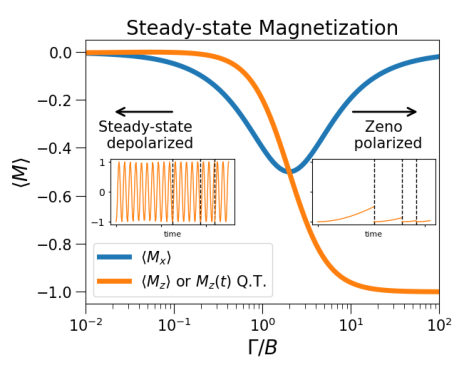
<figcaption class="paper-figure-caption"><b>Fig 1.</b> FIG. 1: Expected steady-state magnetization as reset strength Γ changes relative to drive strength B for model in Eq. (2). Maximum coherent buildup is at Γ/B = 2. Resetting too infrequently leads to scrambling of final evolution length (steady-state depolarized). Resetting too frequently limits coherent evolution, (Zeno polarized). Insets show example quantum trajectories for z-magnetization as these limits are approached.</figcaption>
</figure>
<figure class="paper-figure-card">
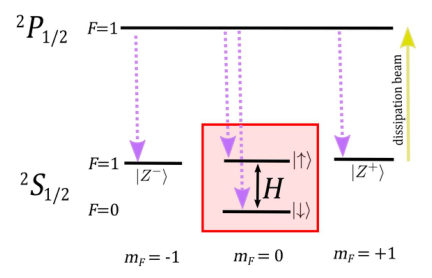
<figcaption class="paper-figure-caption"><b>Fig 2.</b> FIG. 3: Relevant energy levels for in 171Yb+ ions. |2S1/2, F = 0, mF = 0⟩= |↓⟩and |2S1/2, F = 1, mF = 0⟩= |↑⟩act as the eigenstates of σz, and span the computational basis (red square). Optical pumping beam (solid yellow arrow) couples bright states to the excited 2P1/2 levels. Spontaneous decay pathways (purple dotted arrows) enable relaxation to the |2S1/2, F = 1, mF = ±1⟩= |Z±⟩states, which exist outside the computational basis and do not evolve under the coherent drive H (black arrow). The |2P1/2, F = 0⟩state (not shown) enables state-dependent fluorescence through a cycling transition with the bright states, and is dipole-forbidden to |↓⟩.</figcaption>
</figure>
<figure class="paper-figure-card">
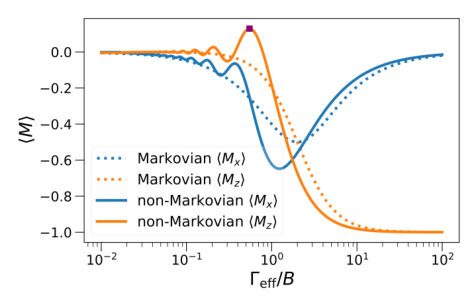
<figcaption class="paper-figure-caption"><b>Fig 3.</b> FIG. 2: Shift in steady-state magnetization induced by non-Markovianity in the dissipation mechanism, specifically for a Pareto (α = 4)-correlated dissipation mechanism. For non-Markovian dissipation, steady-state magnetization can be opposite the reset direction (purple square) for certain intermediate values of Γeff/B.</figcaption>
</figure>
<figure class="paper-figure-card">
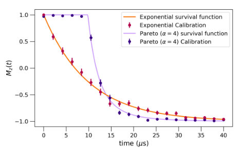
<figcaption class="paper-figure-caption"><b>Fig 4.</b> FIG. 4: Probabilistic operation of a deterministic optical pumping procedure. The state is initialized to |↑⟩, and then optical pumping is applied in the Floquet method above using Γeff ≈100kHz, which reproduces the survival function of f. Correlations between the probabilistic pumping events allow for dissipation profiles which are distinctly non-Markovian.</figcaption>
</figure>
<figure class="paper-figure-card">
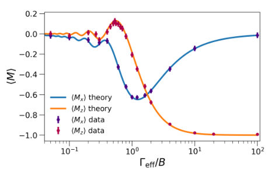
<figcaption class="paper-figure-caption"><b>Fig 5.</b> FIG. 7: Steady-state magnetization expected vs experimental for a non-Markovian dissipation channel defined by a Pareto (α = 4) distribution. We find steady-states that are magnetized oppositely to the Zeno polarized state near Γeff/B ≈0.5, which is unobtainable from systems with Markovian dissipation. Only the z-magnetization (red) sees this effect due to symmetry in Rabi oscillations for ˆx (blue)</figcaption>
</figure>
</div>

<p><strong>Summary.</strong> The paper investigates how engineered non-Markovian dissipation affects the steady state of a single trapped ion spin. By simulating these complex dynamics using trapped ions, the authors experimentally demonstrate that memory effects in the bath can fundamentally change the system's final equilibrium state compared to simpler Markovian models. This opens new avenues for quantum reservoir engineering beyond standard approximations.</p>
<p><strong>Why it may be interesting.</strong> This is highly relevant as it pushes beyond standard Markovian approximations in open quantum systems, providing experimental evidence for novel physics arising from structured environments, which is a frontier area in quantum optics and AMO physics.</p>
<details>
<summary>Detailed structure</summary>
<p><strong>Main problem.</strong> The study aims to understand non-equilibrium physics in open quantum systems where the environment (bath) is structured, leading to non-Markovian memory effects.</p>
<p><strong>Main result.</strong> Non-Markovian dissipation can dramatically alter the steady-state of a single qubit compared to Markovian models, allowing access to novel dissipative regimes inaccessible otherwise.</p>
<p><strong>Method.</strong> The authors simulate the system using trapped ion quantum simulators by implementing engineered non-Markovian bath profiles via probabilistic reset sequences approximating ensemble averages over quantum trajectories.</p>
<p><strong>Model / system.</strong> The physical platform is a single spin-1/2 trapped $^{171}	ext{Yb}^+$ ion. The dynamics are modeled using generalized master equations, contrasting the standard Lindblad (Markovian) form with memory kernel approaches for non-Markovian baths.</p>
<p><strong>Key observables.</strong> Steady-state magnetization ($\langle M_x 
angle, \langle M_z 
angle$) of the spin system.</p>
<p><strong>Important parameters / regimes.</strong> The ratio of effective dissipation rate to coherent drive strength ($\Gamma_{	ext{eff}}/B$), and the correlation structure parameter $\alpha$ (e.g., for a Pareto-correlated bath).</p>
<p><strong>Assumptions / limitations.</strong> The simulation relies on approximating the ensemble average over quantum trajectories using deterministic reset profiles, which is compatible with many-body extensions.</p>
<p><strong>Figures summary.</strong> Figures compare expected vs. experimental steady-state magnetization, showing that non-Markovianity allows for a positive magnetization in the $-	ext{z}$ direction, contrary to Markovian predictions.</p>
<p><strong>Paper structure.</strong> The work establishes the theoretical framework using generalized master equations, details the trapped ion implementation via engineered reset profiles, and presents comparative results demonstrating the unique steady-state signatures of non-Markovian coupling.</p>
</details>
<details>
<summary>Abstract</summary>
<p>Quantum simulation of open quantum systems offers a pathway towards better understanding various non-equilibrium physics that would otherwise be challenging to study. Most open quantum systems studied are modeled as obeying the Markov approximation, where the bath into which the system dissipates information is assumed to be unaffected by the system-bath interaction. However, real baths are in general influenced by this interaction to some degree, and some systems which exist in structured non-Markovian environments can display novel behavior as a result. Here we utilize a trapped ion quantum simulator to simulate a single spin-$1/2$ driven-dissipative system with a non-Markovian dissipation channel, and experimentally compare steady-states to those from an analogous Markovian bath. We observe that a non-Markovian dissipative channel can dramatically change the steady-state even for a single qubit, to a regime inaccessible for Markovian dissipation. This demonstrates the added richness available to quantum systems in structured environments. The techniques used here are compatible with many-body extensions of the model, which can not be simulated efficiently on a classical computer in general. Our work also opens up new possibilities in quantum reservoir engineering beyond the Markovian regime.</p>
</details>
<p><sub><a href="#top">↑ back to top</a></sub></p>

<p><a id="paper-2607.18489"></a></p>
<h3 id="cavity-mediated-charging-of-a-graphene-excitonic-quantum-battery"><a href="http://arxiv.org/abs/2607.18489v1">Cavity-Mediated Charging of a Graphene Excitonic Quantum Battery</a></h3>
<p><strong>Authors:</strong> Maryam Hadipour, Soroush Haseli<br>
<strong>Type:</strong> theory · <strong>Category:</strong> other · <strong>PDF:</strong> <a href="https://arxiv.org/pdf/2607.18489v1">https://arxiv.org/pdf/2607.18489v1</a><br>
<strong>Analysis basis:</strong> full PDF text, analyzed in chunks
<strong>Topic relevance:</strong> 🔥 <code>Tavis-Cummings &amp; cavity-many-emitter</code> <strong>4/5</strong> · 🔥 <code>methods for driven-dissipative</code> <strong>4/5</strong> · <code>analog quantum simulation</code> <strong>3/5</strong> · <code>correlated cavity matter</code> <strong>3/5</strong> · <code>driven-dissipative phase transition</code> <strong>3/5</strong> · <code>non-equilibrium dynamics</code> <strong>2/5</strong> · <code>non-equilibrium universality</code> <strong>2/5</strong> · <code>Keldysh / 2PI / non-Gaussian methods</code> <strong>1/5</strong> · <code>correlated / nonlocal dissipation</code> <strong>1/5</strong> · <code>entanglement &amp; information structure</code> <strong>1/5</strong> · <code>scars &amp; prethermalization</code> <strong>1/5</strong></p>
<div class="figure-strip-hint">↔ Scroll figures horizontally</div>
<div class="paper-figures-scroll">
<figure class="paper-figure-card">
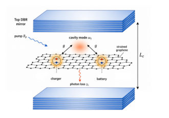
<figcaption class="paper-figure-caption"><b>Fig 1.</b> FIG. 1. A strained graphene layer in a DBR microcavity of length Lc. Two excitonic centers, acting as charger and battery, couple to a central cavity mode ωc with strength g. The system is subject to external pumping Rp and cavity dissipation γc.</figcaption>
</figure>
<figure class="paper-figure-card">
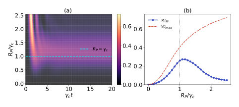
<figcaption class="paper-figure-caption"><b>Fig 2.</b> FIG. 3. (a) Density plot of the normalized ergotropy as a function of the scaled time γct and the normalized pumping rate RP /γc. The dashed horizontal line marks the thresh- old condition RP = γc. (b) Steady-state ergotropy, Wss, and maximum ergotropy, Wmax, plotted as functions of the nor- malized pumping rate RP /γc. The dotted vertical line indi- cates RP /γc = 1.</figcaption>
</figure>
<figure class="paper-figure-card">
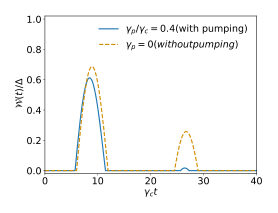
<figcaption class="paper-figure-caption"><b>Fig 3.</b> FIG. 2. W(t)/∆as function of γct. The solid blue curve shows the dynamics under incoherent pumping γp/γc = 0.4, while the dashed yellow curve corresponds to the case without pumping γp = 0 for both the coupling strength is g = 0.25.</figcaption>
</figure>
<figure class="paper-figure-card">
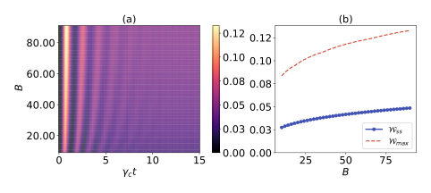
<figcaption class="paper-figure-caption"><b>Fig 4.</b> FIG. 4. (a) Density plot of W(t)/∆as function of γct and pseudomagnetic field B . (b) Wss and Wmax versus pseu- domagnetic field B. The choosen parameters are γc = 1.5, RP = 1.2, γq = 0.0 and g0 = 3.0.</figcaption>
</figure>
<figure class="paper-figure-card">
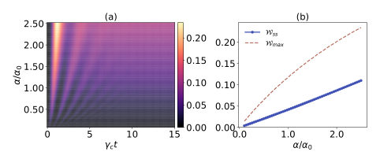
<figcaption class="paper-figure-caption"><b>Fig 5.</b> FIG. 5. (a) W(t)/∆versus the microcavity parameter α/α0 and γct. (b) Wss and Wmax as functions of α/α0. The choosen parameters are γc = 1.5, γq = 0, RP = 1.2,B = 50 T and g0 = 3.0.</figcaption>
</figure>
</div>

<p><strong>Summary.</strong> The paper models a graphene-based excitonic quantum battery coupled to an optical microcavity to study its charging efficiency. By analyzing the system's dynamics using ergotropy, the authors determine that optimal energy storage requires balancing external coherent pumping against cavity dissipation. This work highlights how cavity engineering can enhance the usable work capacity of such solid-state quantum devices.</p>
<p><strong>Why it may be interesting.</strong> This work sits at the intersection of cavity QED, open quantum systems, and energy storage, providing concrete theoretical guidelines for engineering solid-state quantum devices like excitonic batteries.</p>
<details>
<summary>Detailed structure</summary>
<p><strong>Main problem.</strong> The study investigates how efficiently energy can be stored and extracted from a quantum battery implemented using excitons coupled to an optical cavity.</p>
<p><strong>Main result.</strong> The maximum extractable work (ergotropy) is strongly controlled by the light-matter coupling strength, and optimal charging occurs when coherent pumping balances cavity dissipation near a specific ratio.</p>
<p><strong>Method.</strong> The authors solve the open-system dynamics using a master equation approach to model energy flow in the driven-dissipative system.</p>
<p><strong>Model / system.</strong> The physical system is a pair of intervalley excitons in strained graphene acting as a quantum battery, coupled via Tavis-Cummings interaction to a common optical microcavity mode.</p>
<p><strong>Key observables.</strong> Ergotropy (measure of extractable work), transient ergotropy peak ($W_{	ext{max}}$), and steady-state ergotropy ($W_{	ext{ss}}$).</p>
<p><strong>Important parameters / regimes.</strong> Light-matter coupling strength, cavity loss ($\gamma_c$), pumping strength ratio ($ ext{RP}/\gamma_c$), and the pseudomagnetic field parameter ($B$).</p>
<p><strong>Assumptions / limitations.</strong> The analysis assumes low exciton density, neglecting direct exciton-exciton interactions, and that the cavity remains resonant with the excitonic transition.</p>
<p><strong>Figures summary.</strong> Figures illustrate the coupling of two excitons to a microcavity mode; subsequent figures compare ergotropy evolution versus pumping ratios and PMF strength.</p>
<p><strong>Paper structure.</strong> The paper establishes the physical model (Tavis-Cummings Hamiltonian), derives the open-system master equation incorporating both incoherent and coherent driving, analyzes the resulting dynamics using ergotropy as a diagnostic tool, and finally maps out optimal operating regimes by varying external parameters.</p>
</details>
<details>
<summary>Abstract</summary>
<p>We study the charging and work-extraction properties of a graphene-based excitonic quantum battery embedded in a driven-dissipative optical microcavity. The system consists of a pair of intervalley excitons in strained graphene, where one exciton acts as the charger and the other as the quantum battery, both coupled to a common cavity mode through a Tavis-Cummings interaction. By solving the open-system dynamics, we analyze the ergotropy as a measure of extractable work and investigate how coherent and incoherent pumping, cavity loss, and the microcavity parameter influence the charging process. Our results show that the battery exhibits a transient ergotropy peak followed by relaxation to a steady state, with the maximum extractable work strongly controlled by the light-matter coupling strength. The study reveals an optimal regime for efficient charging and demonstrates the role of cavity engineering in enhancing work storage in excitonic quantum batteries.</p>
</details>
<p><sub><a href="#top">↑ back to top</a></sub></p>

<p><a id="paper-2607.18421"></a></p>
<h3 id="coherent-magnons-driven-by-photomodulated-anisotropy-in-altermagnetic-mnte"><a href="http://arxiv.org/abs/2607.18421v1">Coherent Magnons Driven by Photomodulated Anisotropy in Altermagnetic MnTe</a></h3>
<p><strong>Authors:</strong> Dingbin Huang, Jonathon Kruppe, Resham Babu Regmi, Nirmal J. Ghimire, James Analytis, Joseph Orenstein<br>
<strong>Type:</strong> experiment · <strong>Category:</strong> other · <strong>PDF:</strong> <a href="https://arxiv.org/pdf/2607.18421v1">https://arxiv.org/pdf/2607.18421v1</a><br>
<strong>Analysis basis:</strong> full PDF text, analyzed in chunks
<strong>Topic relevance:</strong> 🔥 <code>spintronics-quantum-optics interface</code> <strong>4/5</strong> · <code>driven-dissipative phase transition</code> <strong>3/5</strong> · <code>exotic spin models in light-matter</code> <strong>3/5</strong> · <code>non-equilibrium dynamics</code> <strong>3/5</strong> · <code>analog quantum simulation</code> <strong>2/5</strong> · <code>correlated / nonlocal dissipation</code> <strong>2/5</strong> · <code>methods for driven-dissipative</code> <strong>2/5</strong> · <code>non-equilibrium universality</code> <strong>2/5</strong> · <code>Keldysh / 2PI / non-Gaussian methods</code> <strong>1/5</strong> · <code>quantum measurements</code> <strong>1/5</strong> · <code>quantum optics experiment</code> <strong>1/5</strong></p>
<div class="figure-strip-hint">↔ Scroll figures horizontally</div>
<div class="paper-figures-scroll">
<figure class="paper-figure-card">
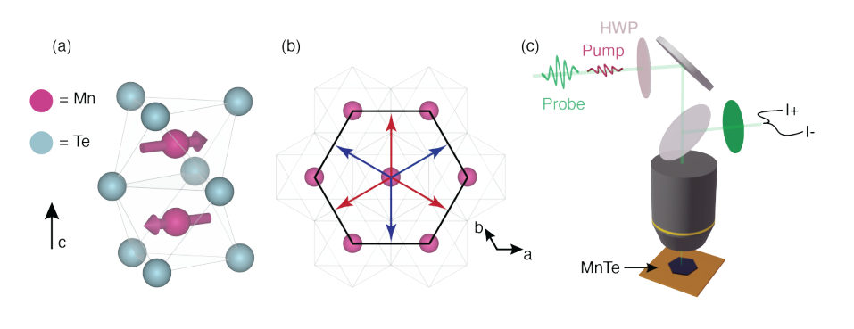
<figcaption class="paper-figure-caption"><b>Fig 1.</b> FIG. 1: Crystal structure side (a) and top (b) view demonstrating hexagonal lattice structure and screw rotation connecting Mn2+ ions. (c) Schematic of the collinear pump-probe configuration. Pump and probe beams are focused onto the sample via an objective, with the transient polarization rotation measured using a balanced detection scheme.</figcaption>
</figure>
<figure class="paper-figure-card">

<figcaption class="paper-figure-caption"><b>Fig 2.</b> FIG. 2: Low-temperature magnon dynamics. (a) Time-resolved pump-probe trace showing the oscillation of L at 10 K. The oscillations are centered on the local equilibrium orientation φL(r). (b) Fast Fourier Transform (FFT) amplitude spectra taken at various sample locations revealing a spatial distribution of the magnon gap frequencies. (c) FFT’s as a function of pump fluence measured at a single fixed location at 20 K. The frequency remains constant over the full range of applied fluence.</figcaption>
</figure>
<figure class="paper-figure-card">
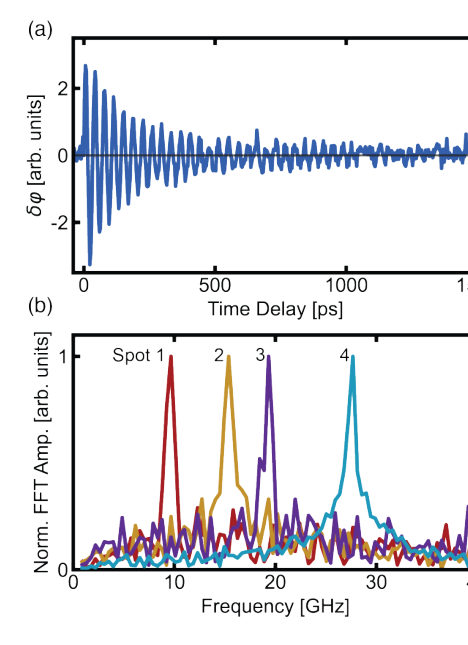
<figcaption class="paper-figure-caption"><b>Fig 3.</b> Fig. 2c, Ωdoes not change as the pump fluence, Φ, increases.</figcaption>
</figure>
<figure class="paper-figure-card">
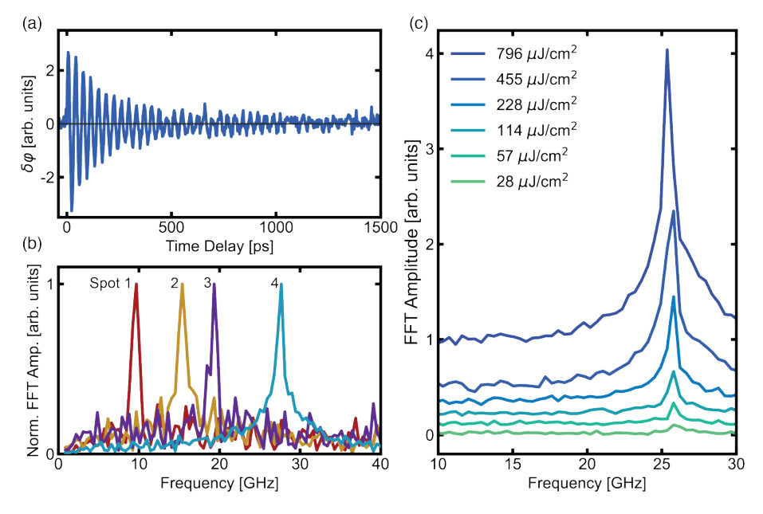
<figcaption class="paper-figure-caption"><b>Fig 4.</b> Fig. 3 illustrates the contrast in photogenerated spin-wave dynamics when the tempera-</figcaption>
</figure>
<figure class="paper-figure-card">
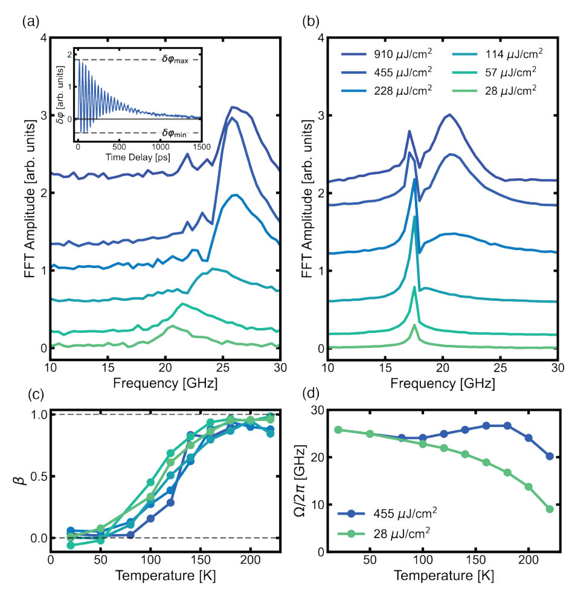
<figcaption class="paper-figure-caption"><b>Fig 5.</b> FIG. 3: High-temperature dynamics: gap frequency is tunable with laser fluence. FFT amplitude spectra as a function of laser fluence when L is oriented near an (a) easy axis and (b) a hard axis at 140 K. Both locations exhibit a peak whose frequency increases with pump fluence. The inset of (a) reveals qualitatively different time-dependence in this regime, as the center of the L oscillation is displaced from the equilibrium position. (c) Temperature dependence of the displaced center of oscillation, illustrating a crossover from an impulsive (β = 0) to a step-like (β = 1) excitation regime as the temperature increases. (d) Temperature dependence of Ωat a low and high fluence showing the...</figcaption>
</figure>
</div>

<p><strong>Summary.</strong> This work uses time-resolved optical measurements on altermagnetic MnTe to study magnon excitations. By mapping the dependence of spin wave properties on pump laser fluence, the authors show that the material's anisotropy can be optically modulated. This opens new avenues for controlling electronic band structure via magnetic order in spintronics.</p>
<p><strong>Why it may be interesting.</strong> The ability to optically tune magnetic anisotropies in a material with zero net magnetization provides an excellent platform for studying non-equilibrium spin dynamics, which has parallels in driven quantum systems.</p>
<details>
<summary>Detailed structure</summary>
<p><strong>Main problem.</strong> The study investigates coherent magnon dynamics driven by photomodulated anisotropy in altermagnetic MnTe, aiming to understand how external tuning controls magnetic order and electronic band structure.</p>
<p><strong>Main result.</strong> The research demonstrated that above a pump fluence threshold, the system exhibits characteristic six-fold symmetric sawtooth dependence of spin wave amplitude and cycloid modulation of frequency, enabling optical control over spin splitting.</p>
<p><strong>Method.</strong> Time-resolved polarimetry was used to spatially map local equilibrium Néel vector orientation ($\varphi_L$) alongside photoexcited spin wave amplitude ($\Delta\varphi$) and frequency ($\Omega$).</p>
<p><strong>Model / system.</strong> The system is MnTe, a prototypical g-wave altermagnet. The dynamics are modeled using a free energy landscape incorporating 6-fold anisotropy ($K_6$) and 2-fold magneto-elastic coupling ($K_2$).</p>
<p><strong>Key observables.</strong> Local equilibrium Néel vector orientation ($\varphi_L$), photoexcited spin wave amplitude ($\Delta\varphi$), and magnon frequency ($\Omega$).</p>
<p><strong>Important parameters / regimes.</strong> Intrinsic anisotropy upper bound of $\approx 60 \mu	ext{eV}$ (0.7 K); critical pump fluence threshold; temperature regimes (low vs. high T).</p>
<p><strong>Assumptions / limitations.</strong> The low-T analysis suggests strain inhomogeneity dominates, while the high-T model assumes photoexcitation induces a modulation of $K_6$.</p>
<p><strong>Figures summary.</strong> Figures illustrate crystal structure and pump-probe setups; key results show fluence dependence leading to sawtooth patterns in $\Delta\varphi$ and cycloid variations in $\Omega$ at higher temperatures.</p>
<p><strong>Paper structure.</strong> The paper progresses from establishing the physical system (altermagnetism) to detailing measurement techniques (time-resolved polarimetry), presenting low-T vs. high-T dynamics, and finally quantifying the photomodulation effects on anisotropy parameters ($K_6$).</p>
</details>
<details>
<summary>Abstract</summary>
<p>Manganese telluride ($\text{MnTe}$) has recently emerged as a prototypical $g$-wave altermagnet, providing an ideal platform to investigate the non-equilibrium excitations of altermagnetic order. Here, we report simultaneous spatial mapping of the local equilibrium orientation of the Néel vector, $\varphi_L(\mathbf{r})$, alongside the amplitude, $Δ\varphi(\mathbf{r},t)$, and frequency, $Ω(\mathbf{r})$, of photoexcited spin waves. Based on these measurements, we place a remarkably low upper bound of $\approx 60~μ\text{eV}$ (0.7 K) on the spin-wave gap arising from intrinsic anisotropy. This exceptionally weak hexagonal anisotropy ($K_6$) renders the altermagnetic order highly susceptible to optical tuning, allowing coherent spin waves to be driven by a photoinduced enhancement of $K_6$. Above a threshold pump fluence, our spatial maps reveal that this photomodulation manifests as a six-fold symmetric sawtooth dependence of $Δ\varphi$ on $\varphi_L$ and a cycloid-like modulation of $Ω$. Ultimately, the near-isotropy of the Néel vector in $\text{MnTe}$ enables optical and mechanical control over the orientation of spin-splitting in the electronic band structure, offering new pathways for altermagnetic spintronics.</p>
</details>
<p><sub><a href="#top">↑ back to top</a></sub></p>

<p><a id="paper-2607.18546"></a></p>
<h3 id="simulating-the-dicke-model-on-qubit-based-and-hybrid-qubit-boson-based-quantum-computers"><a href="http://arxiv.org/abs/2607.18546v1">Simulating the Dicke Model on Qubit-Based and hybrid Qubit-Boson-Based Quantum Computers</a></h3>
<p><strong>Authors:</strong> Aravind P. Babu, Seongjin Ahn, Jing Sun, Augustas G. Landsbergis, Andrey S. Moskalenko, Marko J. Rančić<br>
<strong>Type:</strong> theory · <strong>Category:</strong> other · <strong>PDF:</strong> <a href="https://arxiv.org/pdf/2607.18546v1">https://arxiv.org/pdf/2607.18546v1</a><br>
<strong>Analysis basis:</strong> full PDF text, analyzed in chunks
<strong>Topic relevance:</strong> 🔥 <code>Dicke superradiance</code> <strong>4/5</strong> · <code>Tavis-Cummings &amp; cavity-many-emitter</code> <strong>3/5</strong> · <code>correlated cavity matter</code> <strong>3/5</strong> · <code>Keldysh / 2PI / non-Gaussian methods</code> <strong>2/5</strong> · <code>analog quantum simulation</code> <strong>2/5</strong> · <code>driven-dissipative phase transition</code> <strong>2/5</strong> · <code>methods for driven-dissipative</code> <strong>2/5</strong> · <code>superradiant laser</code> <strong>2/5</strong> · <code>correlated / nonlocal dissipation</code> <strong>1/5</strong> · <code>exotic spin models in light-matter</code> <strong>1/5</strong> · <code>non-equilibrium dynamics</code> <strong>1/5</strong> · <code>non-equilibrium universality</code> <strong>1/5</strong></p>
<div class="figure-strip-hint">↔ Scroll figures horizontally</div>
<div class="paper-figures-scroll">
<figure class="paper-figure-card">
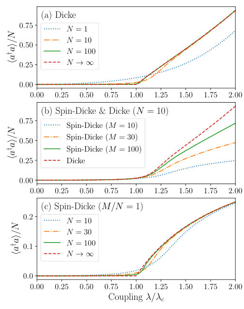
<figcaption class="paper-figure-caption"><b>Fig 1.</b> Figure 1. Average number of cavity excitations per atom, ⟨𝑎†𝑎⟩/𝑁, in dependence on the normalized coupling strength 𝜆/𝜆𝑐[𝜆𝑐is in- troduced after Eq. (9)] in the ground state of (a) the Dicke model, (b) the spin-Dicke model for 𝑁= 10 and several values of 𝑀compared to the Dicke model with 𝑁= 10, and (c) the spin-Dicke model for several 𝑁with fixed 𝑀/𝑁= 1. For the spin-Dicke model, the average boson number is computed via the connection, ⟨𝑎†𝑎⟩↦→⟨𝑆𝑧⟩+ 𝑀/2, given in Eq. (5) with 𝑠= 𝑀/2.</figcaption>
</figure>
<figure class="paper-figure-card">
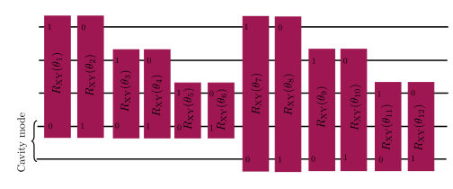
<figcaption class="paper-figure-caption"><b>Fig 2.</b> Figure 2. Circuit for the single layer of parameterized symmetry preserving ansatz in the case of 𝑁= 3 and 𝑀= 2, where the first three qubits are qubits that encode the atoms, and the last two qubits encode the cavity mode. Each gate operation takes the form of exp[−𝑖𝜃𝑋𝑎,𝑛𝑌𝑐,𝑚] or exp[−𝑖𝜃𝑌𝑎,𝑛𝑋𝑐,𝑚], where 𝑄𝑎,𝑛and 𝑄𝑐,𝑚for 𝑄∈{𝑋,𝑌} represent Pauli operators acting on the 𝑛th atomic qubit and the 𝑚th cavity qubit, respectively.</figcaption>
</figure>
<figure class="paper-figure-card">
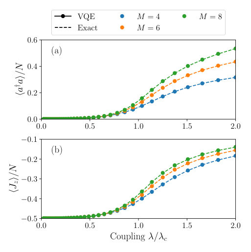
<figcaption class="paper-figure-caption"><b>Fig 3.</b> Figure 3. Expectation values of the cavity excitations per atom and collective atomic operator 𝐽𝑧per atom for the ground state of the spin-Dicke model. The results obtained from the variational quan- tum eigensolver (VQE) using the problem-inspired ansatz (dots) are compared with those from exact diagonalization (dashed lines). In this case, the two results coincide very closely. The system param- eters are 𝑁= 4 atoms, 𝜔= 𝜔0 = 1 , while an ansatz depth of two layers was used.</figcaption>
</figure>
<figure class="paper-figure-card">

<figcaption class="paper-figure-caption"><b>Fig 4.</b> Fig. 4 quantifies the accuracy of the variational solutions by</figcaption>
</figure>
<figure class="paper-figure-card">
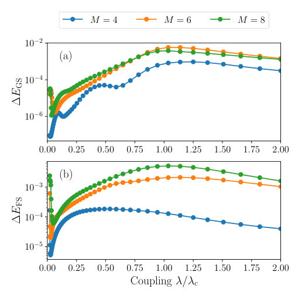
<figcaption class="paper-figure-caption"><b>Fig 5.</b> Figure 4. Energy deviation Δ𝐸= 𝐸VQE −𝐸exact for the ground state (GS) and first excited state (FS) of the spin-Dicke model, shown in panels (a) and (b), respectively. The results are obtained using a problem-inspired ansatz within the variational quantum eigensolver (VQE) and are compared against exact diagonalization. The system parameters are the number of atoms 𝑁= 4, with 𝜔= 𝜔0 = 1, and an ansatz depth of two layers.</figcaption>
</figure>
</div>

<p><strong>Summary.</strong> The paper presents a variational framework to simulate the Dicke model—a key system in quantum optics—on current and future quantum computers. It develops specialized ansätze for both purely qubit-based and hybrid qubit-boson platforms, showing that these methods can accurately capture critical phase transitions. This establishes a scalable methodology for simulating complex light-matter interactions on near-term devices.</p>
<p><strong>Why it may be interesting.</strong> This work directly bridges fundamental quantum optics models (Dicke) with near-term quantum hardware constraints by proposing resource-efficient simulation techniques.</p>
<details>
<summary>Detailed structure</summary>
<p><strong>Main problem.</strong> Developing a variational framework to simulate the finite-size Dicke model on both fully qubit-based (digital) and hybrid qubit-boson based quantum computing platforms.</p>
<p><strong>Main result.</strong> The developed framework successfully reproduces the characteristic critical behavior of the Dicke model in the large-spin limit, offering a scalable path for simulating collective light-matter systems.</p>
<p><strong>Method.</strong> Variational Quantum Algorithms (VQAs), specifically VQE, are employed. The bosonic mode is mapped to qubits via Holstein-Primakoff transformation or treated directly using hybrid ansätze.</p>
<p><strong>Model / system.</strong> The Dicke model describes collective light-matter interactions and can be generalized to inhomogeneous forms. It is studied on quantum computing platforms ranging from fully qubit-encoded systems to hybrid qubit-boson architectures.</p>
<p><strong>Key observables.</strong> Average photon number ($\langle a^\dagger a 
angle / N$), critical behavior, and precursors of the superradiant phase transition.</p>
<p><strong>Important parameters / regimes.</strong> Coupling strength ($\lambda/\lambda_c$), system size ($N$), and bosonic excitation limit ($M=2s$).</p>
<p><strong>Assumptions / limitations.</strong> The approach assumes that symmetry-preserving ansätze can be constructed, though limitations exist for $N>4$ in achieving perfect symmetry preparation.</p>
<p><strong>Figures summary.</strong> Figure 1(b) shows the convergence of the spin-Dicke model's behavior towards the full Dicke model as the bosonic representation size ($M$) increases.</p>
<p><strong>Paper structure.</strong> The paper introduces the variational framework, details the mapping from the continuous boson mode to qubits (spin-Dicke model), develops symmetry-aware ansätze for both fully digital and hybrid representations, and analyzes the resulting critical behavior.</p>
</details>
<details>
<summary>Abstract</summary>
<p>The Dicke model provides a fundamental description of collective light-matter interactions and has long served as a testbed for exploring a wide range of physical phenomena in quantum optics and condensed matter physics. In this work, we develop a variational framework for investigating the finite-size Dicke model on both fully qubit-based (digital) and hybrid qubit boson based (digital-analogue) quantum computing platforms. We show that the resulting model reproduces the characteristic critical behavior of the Dicke model in the appropriate large-spin limit while remaining suitable for implementation on both classical emulators of quantum computers and actual trapped ion quantum computers, albeit in the case of latter somewhat limited by noise. Finally, we introduce a complementary hybrid qubit-bosonic variational ansatz that directly exploits the bosonic degree of freedom to reduce quantum resources and discuss its potential implementation on hybrid quantum hardware. Our results establish a scalable, symmetry-aware framework for variational quantum simulations of collective light-matter systems and provide a pathway toward efficient simulations of more general spin-boson models on near-term quantum devices.</p>
</details>
<p><sub><a href="#top">↑ back to top</a></sub></p>

<p><a id="paper-2607.18805"></a></p>
<h3 id="simulating-majorana-fermions-in-black-hole-with-ising-models"><a href="http://arxiv.org/abs/2607.18805v1">Simulating Majorana fermions in black hole with Ising Models</a></h3>
<p><strong>Authors:</strong> John Vienn A. Estremadura, Kristian Hauser A. Villegas<br>
<strong>Type:</strong> both · <strong>Category:</strong> other · <strong>PDF:</strong> <a href="https://arxiv.org/pdf/2607.18805v1">https://arxiv.org/pdf/2607.18805v1</a><br>
<strong>Analysis basis:</strong> full PDF text, analyzed in chunks
<strong>Topic relevance:</strong> 🔥 <code>analog quantum simulation</code> <strong>4/5</strong> · <code>exotic spin models in light-matter</code> <strong>3/5</strong> · <code>correlated / nonlocal dissipation</code> <strong>2/5</strong> · <code>driven-dissipative phase transition</code> <strong>2/5</strong> · <code>entanglement &amp; information structure</code> <strong>2/5</strong> · <code>methods for driven-dissipative</code> <strong>2/5</strong> · <code>non-equilibrium dynamics</code> <strong>2/5</strong> · <code>Keldysh / 2PI / non-Gaussian methods</code> <strong>1/5</strong> · <code>Kondo &amp; dissipative impurity</code> <strong>1/5</strong> · <code>Rydberg arrays</code> <strong>1/5</strong> · <code>non-equilibrium universality</code> <strong>1/5</strong></p>
<div class="figure-strip-hint">↔ Scroll figures horizontally</div>
<div class="paper-figures-scroll">
<figure class="paper-figure-card">
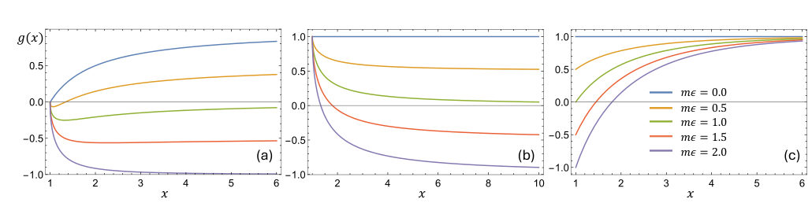
<figcaption class="paper-figure-caption"><b>Fig 1.</b> FIG. 1. Transverse magnetic field as a function of position for spin systems generated using (a) Schwarzschild, (b) tortoise, and (c) Kruskal coordinates, plotted for various values of the parameter mϵ. The black hole horizon is set at rs = 1.</figcaption>
</figure>
<figure class="paper-figure-card">
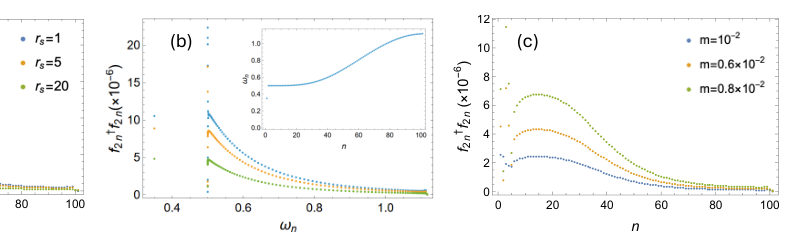
<figcaption class="paper-figure-caption"><b>Fig 2.</b> FIG. 2. Numerical simulation of the fermion number of the Kruskal vacuum using the Ising model, as measured by an observer in tortoise coordinates. Panels (a) and (b) show the fermion number for varying Schwarzschild radius rs as a function of the mode number and the energy eigenvalue, respectively. The inset in (b) shows the energy eigenvalues as a function of the mode number. Panel (c) shows the fermion number as a function of the mode number for varying Majorana mass m.</figcaption>
</figure>
</div>

<p><strong>Summary.</strong> The paper demonstrates that Majorana fermions in curved spacetime can be simulated using the transverse-field Ising model. By showing that different coordinate choices lead to distinct but equivalent spin Hamiltonians, the authors establish a practical route to study black hole physics on tabletop quantum simulators. This work highlights how fundamental symmetries of gravity can emerge from condensed matter systems.</p>
<p><strong>Why it may be interesting.</strong> This work provides a concrete realization where fundamental symmetries of General Relativity emerge from the dynamics of controllable quantum many-body systems like trapped ions or Rydberg arrays, making it highly relevant for AMO physicists studying emergent physics.</p>
<details>
<summary>Detailed structure</summary>
<p><strong>Main problem.</strong> Investigating Quantum Field Theory (QFT) phenomena, such as Hawking radiation, in curved spacetime backgrounds.</p>
<p><strong>Main result.</strong> The authors show that different coordinate representations of the same black hole spacetime map onto distinct but equivalent microscopic Ising spin models, demonstrating emergent general covariance.</p>
<p><strong>Method.</strong> Analog simulation by mapping QFT on curved spacetime to controllable quantum many-body systems (spin chains).</p>
<p><strong>Model / system.</strong> The system uses the transverse-field Ising model applied to Majorana fermions in a Schwarzschild black hole background. The Hamiltonian is derived from the continuum limit of lattice spin models.</p>
<p><strong>Key observables.</strong> Spin correlation measurements used to simulate and detect black hole particle production, which are compared against Fermi-Dirac distributions.</p>
<p><strong>Important parameters / regimes.</strong> The Hawking temperature ($k_B T/J$) and the Majorana mass ($m$), which governs the particle number expectation value.</p>
<p><strong>Assumptions / limitations.</strong> The analysis relies on taking the continuum limit approximation when mapping lattice models to field theory, and using $\zeta(t, x) = 0$ for simplification in some derivations.</p>
<p><strong>Figures summary.</strong> Figure 2(b) shows that the simulated particle number follows a Fermi-Dirac distribution whose temperature scales with the Schwarzschild radius; Figure 2(a) discusses oscillations related to finite Kruskal time or discretization effects.</p>
<p><strong>Paper structure.</strong> The paper first establishes the mapping from QFT in curved spacetime to spin models, then analyzes how different coordinate systems (Schwarzschild vs. conformally flat) yield distinct but equivalent microscopic Hamiltonians, and finally applies this framework to calculate particle production via correlation measurements.</p>
</details>
<details>
<summary>Abstract</summary>
<p>Quantum field theory (QFT) in curved spacetime has led to profound predictions, including the Unruh effect and Hawking radiation, yet their direct observation remains extraordinarily challenging because of their extremely weak signatures. Here, we show that the transverse-field Ising model provides a quantum simulator for Majorana fermions in a Schwarzschild black hole background. Remarkably, different coordinate representations of the same spacetime-Schwarzschild, tortoise, Kruskal, and conformally flat-map onto distinct microscopic Ising spin models. Despite their microscopic differences, these models converge in the continuum limit to the same Majorana field theory, exhibiting an emergent form of general covariance. This provides a rare example of a fundamental symmetry of general relativity arising as an emergent property of a condensed matter system. We further demonstrate how black hole particle production can be simulated and detected through spin correlation measurements, and discuss experimental platforms capable of realizing these models. Our work establishes a practical route for investigating fermionic QFT in curved spacetime using controllable quantum many-body systems and tabletop experiments.</p>
</details>
<p><sub><a href="#top">↑ back to top</a></sub></p>

<p><a id="paper-2607.19208"></a></p>
<h3 id="dynamical-correlation-functions-of-extensive-charges-after-global-quantum-quenches"><a href="http://arxiv.org/abs/2607.19208v1">Dynamical correlation functions of extensive charges after global quantum quenches</a></h3>
<p><strong>Authors:</strong> Riccardo Travaglino, Katja Klobas, Bruno Bertini, Pasquale Calabrese<br>
<strong>Type:</strong> theory · <strong>Category:</strong> statistical mechanics · <strong>PDF:</strong> <a href="https://arxiv.org/pdf/2607.19208v1">https://arxiv.org/pdf/2607.19208v1</a><br>
<strong>Analysis basis:</strong> full PDF text, analyzed in chunks
<strong>Topic relevance:</strong> 🔥 <code>non-equilibrium dynamics</code> <strong>4/5</strong> · <code>analog quantum simulation</code> <strong>3/5</strong> · <code>entanglement &amp; information structure</code> <strong>3/5</strong> · <code>non-equilibrium universality</code> <strong>3/5</strong> · <code>methods for driven-dissipative</code> <strong>2/5</strong> · <code>scars &amp; prethermalization</code> <strong>2/5</strong> · <code>Keldysh / 2PI / non-Gaussian methods</code> <strong>1/5</strong> · <code>correlated / nonlocal dissipation</code> <strong>1/5</strong> · <code>driven-dissipative phase transition</code> <strong>1/5</strong></p>
<div class="figure-strip-hint">↔ Scroll figures horizontally</div>
<div class="paper-figures-scroll">
<figure class="paper-figure-card">
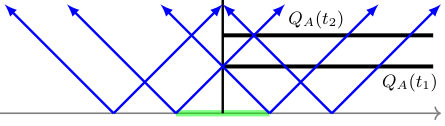
<figcaption class="paper-figure-caption"><b>Fig 1.</b> Figure 1: Quasiparticle-picture explanation of Eq. (1). The only quasiparticle pairs contributing to the connec- ted correlator are those emanated from the green region. These correlated pairs will cross all the charge lines once independent of their vertical position.</figcaption>
</figure>
<figure class="paper-figure-card">
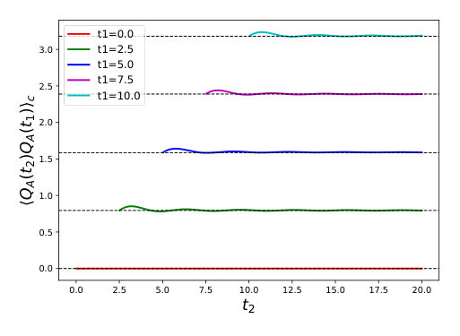
<figcaption class="paper-figure-caption"><b>Fig 2.</b> Figure 2: Connected two point function vs t2 after a quench from the fermionic Néel state in the tight bind- ing model for a subsystem of ℓA = 40 sites. Dashed lines represent Q2 A(t1)</figcaption>
</figure>
<figure class="paper-figure-card">
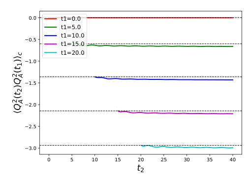
<figcaption class="paper-figure-caption"><b>Fig 3.</b> Figure 3: Connected 4-point function Q2 A(t2)Q2 A(t1)</figcaption>
</figure>
<figure class="paper-figure-card">
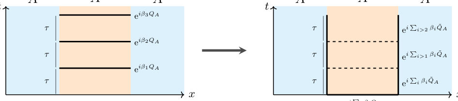
<figcaption class="paper-figure-caption"><b>Fig 4.</b> Figure 4: Deformation of charge lines at times nτ to vertical insertions of the dual charge ˜QA, which represent insertions of charge lines in the dual theory. The contribution of the initial state is trivial for symmetric initial states, hence Q0 is just a number, and all the relevant physics takes place at the boundaries of A.</figcaption>
</figure>
<figure class="paper-figure-card">
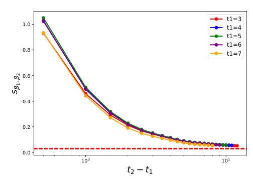
<figcaption class="paper-figure-caption"><b>Fig 5.</b> Figure 5: Slope of the 2−FCS normalised by the term depending on t1 alone, in the XXZ chain with ∆= 0.5. Here, β1 = π/4 and β2 = π/8, the total system size is L = 80 with ℓA = 40. The asymptotic value reached by sβ1,β2, represented by the dashed line is precisely the slope of the single-time FCS obtained in [55].</figcaption>
</figure>
</div>

<p><strong>Summary.</strong> This paper develops a theoretical framework to calculate how extensive charges fluctuate after a quantum quench. By exploiting space-time duality and assuming weak time correlations, the authors show that complex multi-time correlation functions simplify dramatically, depending only on the earliest measurement time. This provides significant analytical simplification for studying non-equilibrium dynamics in many-body systems.</p>
<p><strong>Why it may be interesting.</strong> This work provides powerful analytical tools (like the time-shell structure) to simplify complex non-equilibrium dynamics in many-body systems, which is crucial for understanding thermalization and quantum quenches relevant to AMO physics.</p>
<details>
<summary>Detailed structure</summary>
<p><strong>Main problem.</strong> The research focuses on characterizing the dynamical correlation functions of extensive U(1) charges following a global quantum quench.</p>
<p><strong>Main result.</strong> Under conditions like ballistic transport, connected correlation functions simplify drastically, depending only on the smallest time entering the correlator. The $n$-FCS factorizes into a structure related to single-time FCS.</p>
<p><strong>Method.</strong> The authors employ space-time duality and analyze multi-time Full Counting Statistics (n-FCS) using techniques applicable to free fermionic systems, generalizing results to interacting models.</p>
<p><strong>Model / system.</strong> The study uses lattice Hamiltonians with a global U(1) conserved charge $Q$, often modeled via the XX chain or general free/interacting fermionic systems undergoing a quantum quench from an initial symmetric state.</p>
<p><strong>Key observables.</strong> Multi-time Full Counting Statistics (n-FCS), connected time-ordered correlation functions $\langle T Q_A(t_n) \cdots Q_A(t_1) 
angle_c$, and the restricted charge $Q_A$ on a subsystem $A$.</p>
<p><strong>Important parameters / regimes.</strong> Ballistic transport regime, large subsystem size ($\ell_A$), and the specific time ordering of measurements $\{t_i\}$.</p>
<p><strong>Assumptions / limitations.</strong> The key results are derived assuming weak time correlations (e.g., ballistic transport) and utilizing space-time duality to relate non-equilibrium dynamics to simpler structures.</p>
<p><strong>Figures summary.</strong> Figures illustrate numerical tests confirming that the connected two-point function depends only on the earliest time $t_{\min}$, and show the structure of the four-point function being independent of later times.</p>
<p><strong>Paper structure.</strong> The paper develops the formalism by first analyzing the n-FCS, exploiting space-time duality to derive factorization properties, and then applying these results to simplify the connected correlation functions for various time orderings.</p>
</details>
<details>
<summary>Abstract</summary>
<p>We investigate the $n$-time cumulant generating function (or $n$-Full Counting Statistics, $n$-FCS) of extensive $U(1)$ charges following a quantum quench. Exploiting space-time duality we characterise this function when evolving from initial states that are symmetric under the action of the charge. In particular, we show that if the correlations in time are sufficiently weak, e.g.\ the transport is ballistic, the $n$-FCS factorises into a sum of single-time FCS arranged in a time-shell structure. A direct implication of this structure is a drastic simplification of dynamical correlation functions: in the presence of time ordering they only depend on the smallest time entering the correlator. We support these findings with several analytical and numerical tests performed in free and interacting models.</p>
</details>
<p><sub><a href="#top">↑ back to top</a></sub></p>

<p><a id="paper-2607.18809"></a></p>
<h3 id="ecological-networks-of-viable-species-with-degree-dependent-interaction"><a href="http://arxiv.org/abs/2607.18809v1">Ecological networks of viable species with degree-dependent interaction</a></h3>
<p><strong>Authors:</strong> Hae Seong Lee, Deok-Sun Lee, Sang Hoon Lee, Samir Suweis, Hye Jin Park<br>
<strong>Type:</strong> theory · <strong>Category:</strong> statistical mechanics · <strong>PDF:</strong> <a href="https://arxiv.org/pdf/2607.18809v1">https://arxiv.org/pdf/2607.18809v1</a><br>
<strong>Analysis basis:</strong> full PDF text, analyzed in chunks
<strong>Topic relevance:</strong> 🔥 <code>non-equilibrium dynamics</code> <strong>4/5</strong> · <code>driven-dissipative phase transition</code> <strong>3/5</strong> · <code>methods for driven-dissipative</code> <strong>3/5</strong> · <code>non-equilibrium universality</code> <strong>3/5</strong> · <code>Keldysh / 2PI / non-Gaussian methods</code> <strong>2/5</strong> · <code>analog quantum simulation</code> <strong>2/5</strong> · <code>correlated / nonlocal dissipation</code> <strong>1/5</strong> · <code>entanglement &amp; information structure</code> <strong>1/5</strong> · <code>scars &amp; prethermalization</code> <strong>1/5</strong></p>
<div class="figure-strip-hint">↔ Scroll figures horizontally</div>
<div class="paper-figures-scroll">
<figure class="paper-figure-card">
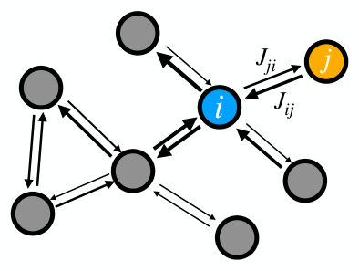
<figcaption class="paper-figure-caption"><b>Fig 1.</b> FIG. 1. Schematic illustration of the model in Eq. (1). Species are represented as nodes in a network, with directed interactions denoted by arrows. The interaction strength Jij, representing the effect of species j on species i, is a quenched random variable that may de- pend on the degrees ki and k j of species i and j, as defined in Eq. (2). Interactions are bidirectional (Aij = Aji) but their strengths are gen- erally asymmetric (Jij , Jji).</figcaption>
</figure>
<figure class="paper-figure-card">
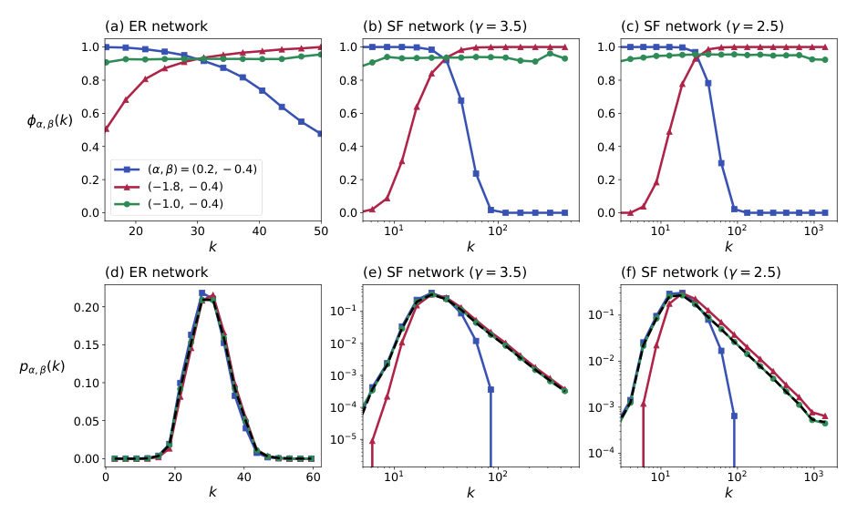
<figcaption class="paper-figure-caption"><b>Fig 2.</b> FIG. 2. Numerical simulation results of the GRLV model in Eq. (1) on ER and static SF networks with γ = 3.5 and γ = 2.5. Panels (a)–(c) show the degree-specific survival probability ϕα,β(k), and panels (d)–(f) show the distribution of the initial degree p′ α,β(k) of surviving species for (α, β) = (−1.8, −0.4), (−1.0, −0.4), and (0.2, −0.4). The survival probability exhibits three distinct behaviors across the given parameter sets for all networks. For (α, β) = (−1.8, −0.4) (red triangle), ϕα,β(k) increases with k, indicating that hub species are more likely to survive than low- degree species. The opposite behavior is observed for (α, β) = (0.2, −0.4) (blue square), where ϕα,β(k) decreases...</figcaption>
</figure>
<figure class="paper-figure-card">
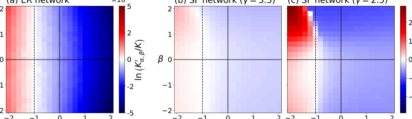
<figcaption class="paper-figure-caption"><b>Fig 3.</b> FIG. 3. The heatmap of ln(K′ α,β/K), where K′ α,β is the mean initial degree of surviving species for a given parameter set (α, β), and K is the mean degree of the initial network. Panels (a)–(c) correspond to the ER network, and static SF networks with γ = 3.5 and 2.5, respectively. The (α, β) plane is divided into a hub-favored phase (K′ α,β &gt; K, red) and a hub-suppressed phase (K′ α,β &lt; K, blue). The phase boundary is represented by the white region where K′ α,β = K. In the ER network, the phase boundary lies at α ≈−1 throughout all values of β we consider. Similarly, the phase boundary is also found at α ≈−1 in the static SF networks but deviates from α = −1 to more negative α values in...</figcaption>
</figure>
<figure class="paper-figure-card">

<figcaption class="paper-figure-caption"><b>Fig 4.</b> FIG. 4. (a), (b) Change in the degree assortativity coefficient ∆r and (c), (d) mean survival probability ⟨ϕα,β⟩in the α-β plane for static SF networks with (a), (c) γ = 3.5 and (b), (d) γ = 2.5. The black dashed vertical line indicates the phase boundary at α = −1 predicted by the mean-field approach. The degree assortativity of the surviving net- work decreases in the hub-favored phase (α &lt; −1) while it increases in the hub-suppressed phase (α &gt; −1), except in the large-β regime where the mean survival probability becomes very low. Each point is averaged over 100 simulations with the same simulation settings as in Sec. IV.</figcaption>
</figure>
</div>

<p><strong>Summary.</strong> This paper extends ecological models by incorporating degree-dependent interaction strengths into the GLV framework. It identifies two key regimes—hub-favored and hub-suppressed—which dictate whether highly connected species thrive or perish. The findings demonstrate that these structural biases are a fundamental mechanism for generating the wide range of assortativity observed in real biological networks.</p>
<p><strong>Why it may be interesting.</strong> While focused on ecology, the mathematical machinery—analyzing non-equilibrium steady states, phase transitions based on connectivity structure, and emergent collective behavior from local interactions—shares deep conceptual parallels with analyzing complex quantum many-body systems or open quantum systems dynamics.</p>
<details>
<summary>Detailed structure</summary>
<p><strong>Main problem.</strong> The study investigates how correlating interaction strengths with species connectivity (degree) affects species survival and network structure in ecological models.</p>
<p><strong>Main result.</strong> Degree-dependent interactions create distinct hub-favored or hub-suppressed phases, which fundamentally shape the resulting network's degree assortativity, potentially explaining observed patterns in real food webs.</p>
<p><strong>Method.</strong> The analysis employs a mean-field approximation applied to the Generalized Lotka-Volterra framework, deriving stationary states and analyzing phase boundaries based on scaling exponents $(\alpha, eta)$.</p>
<p><strong>Model / system.</strong> The model uses the GLV framework for species abundance dynamics on large ecological networks (ER or SF), where interaction strengths $J_{ij}$ are quenched random variables dependent on the degrees of interacting species.</p>
<p><strong>Key observables.</strong> Stationary abundance of species, degree assortativity coefficient ($r$), and the resulting degree distribution of viable species ($p'$).</p>
<p><strong>Important parameters / regimes.</strong> The scaling exponents $(\alpha, eta)$ governing the degree dependence of interaction strengths; the critical phase boundary is often found near $\alpha = -1$.</p>
<p><strong>Assumptions / limitations.</strong> The analysis relies heavily on mean-field approximations for deriving stationary states and calculating survival probabilities.</p>
<p><strong>Figures summary.</strong> Figures illustrate the delineation between hub-favored (red) and hub-suppressed (blue) phases in the $(\alpha, eta)$ plane, showing how species composition shifts based on interaction strength correlations.</p>
<p><strong>Paper structure.</strong> The paper systematically introduces the degree-dependent GLV model, derives the survival probability $\phi(k)$, establishes the phase boundaries using mean-field theory, and finally links these theoretical phases to observable changes in network assortativity.</p>
</details>
<details>
<summary>Abstract</summary>
<p>The generalized Lotka-Volterra (GLV) framework, recently advanced by dynamical mean-field theory, enables the systematic analysis of large ecological networks. When combined with structured interaction topologies, previous studies have shown that the viability of species, defined by having a positive stationary abundance, depends on the number of their interacting neighbors or the "degree." While such model studies usually assume that interaction strengths follow an identical distribution across all connected pairs, real ecological communities often exhibit correlations between interaction strength and a species' degree. To capture this overlooked feature, we introduce degree-dependent interaction strengths into a generalized random LV model. We identify two distinct regimes: a hub-favored phase, where highly connected species survive preferentially, and a hub-suppressed phase, where they face higher extinction risks. We analytically derive the phase boundary where these degree-dependent strengths precisely balance the connectivity effect, leaving all species equally susceptible. Crucially, these phases induce opposing shifts in the degree-degree correlation or "assortativity" of the network of viable species: the hub-favored phase enhances disassortativity by selectively removing the interactions between low-degree species, whereas the hub-suppressed phase reduces it as the interactions involving hub species tend to disappear. Ultimately, our findings demonstrate that degree-dependent interactions are a fundamental mechanism not only for shaping species survival, but for naturally reproducing the wide range of assortativity values observed in real ecological networks.</p>
</details>
<p><sub><a href="#top">↑ back to top</a></sub></p>

<p><a id="paper-2607.19278"></a></p>
<h3 id="efficient-quantum-transport-in-disordered-floquet-networks"><a href="http://arxiv.org/abs/2607.19278v1">Efficient quantum transport in disordered Floquet networks</a></h3>
<p><strong>Authors:</strong> Hlér Kristjánsson, Jonathan Brugger, Gabriel Dufour, Christian Scheppach, Andreas Buchleitner<br>
<strong>Type:</strong> theory · <strong>Category:</strong> disordered systems and neural networks · <strong>PDF:</strong> <a href="https://arxiv.org/pdf/2607.19278v1">https://arxiv.org/pdf/2607.19278v1</a><br>
<strong>Analysis basis:</strong> full PDF text, analyzed in chunks
<strong>Topic relevance:</strong> 🔥 <code>analog quantum simulation</code> <strong>4/5</strong> · 🔥 <code>non-equilibrium dynamics</code> <strong>4/5</strong> · <code>driven-dissipative phase transition</code> <strong>3/5</strong> · <code>methods for driven-dissipative</code> <strong>3/5</strong> · <code>non-equilibrium universality</code> <strong>2/5</strong> · <code>Keldysh / 2PI / non-Gaussian methods</code> <strong>1/5</strong> · <code>correlated / nonlocal dissipation</code> <strong>1/5</strong> · <code>entanglement &amp; information structure</code> <strong>1/5</strong> · <code>scars &amp; prethermalization</code> <strong>1/5</strong></p>
<div class="figure-strip-hint">↔ Scroll figures horizontally</div>
<div class="paper-figures-scroll">
<figure class="paper-figure-card">

<figcaption class="paper-figure-caption"><b>Fig 1.</b> FIG. 1. Diagram of the energy levels of the diagonal N- site Hamiltonian Hd. The energies corresponding to each site are normally distributed with mean D/2 −D(n −1)/(N −1) and variance σ2 d, where σd is taken to be of comparable size as the average energy difference D/N between neighboring sites. Moreover, we take σd = σ0, the standard deviation of the couplings of the static Hamiltonian H0.</figcaption>
</figure>
<figure class="paper-figure-card">

<figcaption class="paper-figure-caption"><b>Fig 2.</b> FIG. 2. Excitation transfer with a dominant Floquet dou- blet: Excitation probability on the input (blue), output (yel- low) and intermediate sites (other colors) for a randomly gen- erated seven-site Floquet-antisymmetric network with the pa- rameters σd = σ0, D = 10 σ0, σv = 0.1 σ0, ω = ω0 and satisfying the dominant Floquet doublet condition (6) with β ≥0.9.</figcaption>
</figure>
<figure class="paper-figure-card">

<figcaption class="paper-figure-caption"><b>Fig 3.</b> FIG. 3. Density histograms of Pmax vs. β for 105 randomly sampled seven-site Hamiltonians of the form (2) with the pa- rameters σd = σ0, D = 10 σ0, σv = 0.1 σ0, ω = ω0. Here, Pmax is taken as the maximum value of P(t) within a time interval 2τexp, where τexp = πℏ|ε+ −ε−|−1 is the expected transfer time. In panel (a) no particular condition is imposed on the Hamiltonians whereas in panel (b) the Hamiltonians are chosen to be Floquet-antisymmetric, i.e. {HF, Þ} = 0. The gray dashed line indicates the bound Pmax ≥β2. Only the realizations with Pmax, β ≥0.5 are shown, of which there are 55145 out of 100000 in (a) and 67654 out of 100000 in (b). The bin size is 0.01 in both axes. The marginal...</figcaption>
</figure>
<figure class="paper-figure-card">

<figcaption class="paper-figure-caption"><b>Fig 4.</b> FIG. 4. Two-phonon transfer with a dominant Floquet triplet: (a) Excitation probability on the input (blue), out- put (yellow), central (green) and other intermediate sites (other colors) for a randomly generated seven-site Floquet- antisymmetric network with the parameters σd = σ0, D = 10 σ0, σv = 0.1 σ0, ω = ω0/2, and satisfying the dominant Floquet triplet condition (10) with γ ≥0.9. (b) Density his- togram of Pmax vs. γ for 105 randomly sampled Floquet anti- symmetric Hamiltonians with the same parameters as in (a). Here, Pmax is taken as the maximum value of P(t) within a time interval 2τexp, where τexp = πℏ|ε+|−1 is the expected transfer time. The gray dashed line indicates the bound...</figcaption>
</figure>
<figure class="paper-figure-card">

<figcaption class="paper-figure-caption"><b>Fig 5.</b> FIG. 5. Histogram of transfer probabilities Pmax vs. transfer time enhancement τ/τref for 105 randomly generated seven- site networks with the parameters σd = σ0, D = 10 σ0, σv = 0.1 σ0, ω = ω0. Only the 46011 realizations for which τ/τref &lt; 2 and Pmax &gt; 0.5 (of the the total 100000) are shown. The bin size is 0.01 for Pmax and 0.05 for τ/τref. Realizations to the left of the dashed gray line, of which there are 28682, show an enhancement of the transfer time with respect to a network with no static couplings. Realizations to the left of the dashed blue line, of which there are 2066, show an order-of magnitude enhancement. The marginal histograms of transfer probabilities and transfer time...</figcaption>
</figure>
</div>

<p><strong>Summary.</strong> The authors develop theoretical principles to ensure efficient quantum transport through disordered networks driven by external vibrations. They show that imposing symmetries on the Floquet Hamiltonian can engineer near-perfect energy transfer via resonant coupling mechanisms (doublets/triplets). Crucially, they demonstrate that static disorder is not merely a hindrance but an active component enabling significant speedups in the overall transport process.</p>
<p><strong>Why it may be interesting.</strong> This work provides concrete, symmetry-based design rules for optimizing energy transfer in complex quantum systems, drawing parallels to biological light-harvesting complexes. The combination of Floquet engineering with disorder analysis is highly relevant to open quantum systems research.</p>
<details>
<summary>Detailed structure</summary>
<p><strong>Main problem.</strong> The paper proposes mechanisms for achieving fast and efficient quantum energy transport through disordered, periodically driven (Floquet) quantum networks.</p>
<p><strong>Main result.</strong> Near-perfect transport can be engineered by imposing symmetries like Floquet antisymmetry or ensuring the existence of dominant quasi-energy doublets/triplets. Furthermore, static couplings are shown to be essential for achieving speedups in transfer time compared to models neglecting them.</p>
<p><strong>Method.</strong> The analysis relies heavily on Floquet theory to analyze the time evolution governed by a periodically driven Hamiltonian, supplemented by symmetry constraints and resonance conditions.</p>
<p><strong>Model / system.</strong> The model is an N-site network of two-level systems whose dynamics are described by a time-periodic Hamiltonian $H(t) = H_0 + H_d + \sin(\omega t)H_v$. Disorder is introduced via the Gaussian Orthogonal Ensemble (GOE) sampling for couplings.</p>
<p><strong>Key observables.</strong> Transfer probability ($P_{\max}$), quasi-energies ($\epsilon_j$), and characteristic strengths quantifying resonance conditions ($eta$ for doublets, $\gamma$ for triplets).</p>
<p><strong>Important parameters / regimes.</strong> The driving frequency ($\omega$) must resonate with the energy gap ($\omega_0 = e_1 - e_N$). The relative strength of static vs. vibrational couplings is crucial.</p>
<p><strong>Assumptions / limitations.</strong> The dynamics are treated unitarily, and the resonant process driven by a single phonon (or two phonons) is assumed to dominate over other vibrational modes.</p>
<p><strong>Figures summary.</strong> Figures illustrate energy level distributions, show excitation transfer for dominant Floquet doublets ($eta \ge 1$), and present histograms comparing transport probability versus time enhancement factors derived from static vs. dynamic coupling regimes.</p>
<p><strong>Paper structure.</strong> The paper develops the formalism using Floquet theory, establishes design principles based on symmetries (like Floquet antisymmetry) to enhance resonance conditions (doublet/triplet formation), and finally analyzes how the interplay between static disorder ($H_0$) and driving ($H_d$) dictates both transport efficiency and speed.</p>
</details>
<details>
<summary>Abstract</summary>
<p>We propose a mechanism for fast and efficient quantum transport through disordered networks with variable on-site energies, inspired by photosynthetic complexes. The mechanism relies on an interplay between inter-site couplings of the network and driving by external vibrations. Two design principles are shown to ensure close-to-perfect transport despite the disorder, namely a reflection symmetry in Floquet-Hilbert space and the existence of a dominant doublet or triplet of Floquet states.</p>
</details>
<p><sub><a href="#top">↑ back to top</a></sub></p>

<p><a id="paper-2607.18542"></a></p>
<h3 id="from-canonical-to-tunable-phase-diagrams-in-open-quantum-long-range-systems"><a href="http://arxiv.org/abs/2607.18542v1">From Canonical to Tunable Phase Diagrams in Open Quantum Long-Range Systems</a></h3>
<p><strong>Authors:</strong> Anish Acharya, Shamik Gupta<br>
<strong>Type:</strong> theory · <strong>Category:</strong> statistical mechanics · <strong>PDF:</strong> <a href="https://arxiv.org/pdf/2607.18542v1">https://arxiv.org/pdf/2607.18542v1</a><br>
<strong>Analysis basis:</strong> full PDF text, analyzed in chunks
<strong>Topic relevance:</strong> 🔥 <code>driven-dissipative phase transition</code> <strong>4/5</strong> · <code>correlated / nonlocal dissipation</code> <strong>3/5</strong> · <code>methods for driven-dissipative</code> <strong>3/5</strong> · <code>non-equilibrium universality</code> <strong>3/5</strong> · <code>non-equilibrium dynamics</code> <strong>2/5</strong> · <code>Keldysh / 2PI / non-Gaussian methods</code> <strong>1/5</strong> · <code>analog quantum simulation</code> <strong>1/5</strong> · <code>exotic spin models in light-matter</code> <strong>1/5</strong> · <code>measurement-induced transitions</code> <strong>1/5</strong> · <code>quantum measurements</code> <strong>1/5</strong></p>
<div class="figure-strip-hint">↔ Scroll figures horizontally</div>
<div class="paper-figures-scroll">
<figure class="paper-figure-card">

<figcaption class="paper-figure-caption"><b>Fig 1.</b> FIG. 1. Canonical phase diagram of the model (1) in the (h, K)- plane, obtained as the stationary state solution of the Lindblad equa- tion (3) and at βJ = 2/3, along with behavior of the Landau coef- ficients b and c. We also show the continuous transition line (52) (black solid line) and the first-order transition line (black dashed line). The color map shows the sixth-order coefficient c, while the violet (dashed) contour denotes the locus b = 0, passing through the tricritical point (54) (green star). Above the contour, we have b &lt; 0, while one has b &gt; 0 below it. In the region with b &lt; 0, one has c &gt; 0.</figcaption>
</figure>
<figure class="paper-figure-card">

<figcaption class="paper-figure-caption"><b>Fig 2.</b> FIG. 3. Corresponding to the stationary state of the NLME (55), here we show the quantity ⟨mz⟩ss(h− c ), obtained by evaluating ⟨mz⟩ss just below the transition point hc by using Eq. (80), as a function of the retention probability η1, for fixed η2 = 0.5, K = 0.22, and βJ = 2/3. For the corresponding bare model (η1 = η2 = 0), the transition is first order (see Fig. 1). The inset shows the behavior of hc as a function of η1 for the same choice of the parameters as in the main plot, where the nature of the transition changes from first order (black dashed) to continuous (black solid) across the tricritical point marked as the blue star.</figcaption>
</figure>
<figure class="paper-figure-card">

<figcaption class="paper-figure-caption"><b>Fig 3.</b> FIG. 2. Phase diagram of the model (1) in the (h, K)-plane, obtained as the NESS solution of the NLME (55) for different choices of the retention probabilities η1 and η2 and at βJ = 2/3 (panel (i)). The solid lines denote the continuous transition line (83), the star denotes the corresponding tricritical point, while dashed lines denote the first- order transition line. Panel (ii) shows for η1 = 0.95, η2 = 0.5 the color map of the coefficient C in Eq. (82), while the green (dashed) contour denotes the locus of B = 0, passing through the correspond- ing tricritical point (blue star). Above the contour, we have B &gt; 0, while below it, one has B &lt; 0. In the region with B &gt; 0, one has C &lt; 0.</figcaption>
</figure>
<figure class="paper-figure-card">

<figcaption class="paper-figure-caption"><b>Fig 4.</b> FIG. 4. Behavior of the function g(m) in Eq. (B1) for (a) the con- tinuous transition regime (B &lt; 0), and (b) the first-order transition regime (B &gt; 0). In (a), one has (i) a zero stable solution for A &lt; 1, and (ii) a non-zero stable solution for A &gt; 1. In (b), one has (i) a zero stable solution for A &lt; A ∗, (ii) coexistence of two stable solu- tions, one zero and one non-zero, at A = A ∗(for the plot, we have A ∗≈−0.04), and (iii) a non-zero stable solution for A &gt; A ∗.</figcaption>
</figure>
</div>

<p><strong>Summary.</strong> This paper analyzes the dynamics of an open quantum spin system, showing that moving beyond ideal Lindblad evolution by incorporating imperfect quantum jumps allows for profound control over its steady state. By tuning these 'jump-retention' parameters, researchers can engineer entirely new nonequilibrium phase diagrams, demonstrating a powerful mechanism for controlling collective quantum behavior.</p>
<p><strong>Why it may be interesting.</strong> This work is highly relevant as it provides a concrete theoretical framework for using engineered dissipation (non-Markovian or non-ideal jump processes) to control and stabilize quantum phases inaccessible under standard thermal equilibrium assumptions.</p>
<details>
<summary>Detailed structure</summary>
<p><strong>Main problem.</strong> The study investigates how controlled dissipation, implemented via imperfect quantum jumps, can fundamentally alter the stationary state of an open quantum system compared to its canonical thermal equilibrium.</p>
<p><strong>Main result.</strong> The analysis demonstrates that by tuning jump-retention parameters, one can engineer genuine nonequilibrium stationary states (NESS) whose phase transition boundaries and nature differ qualitatively from the standard linear Lindblad case.</p>
<p><strong>Method.</strong> The authors employ mean-field approximations applied to the Lindblad master equation, extending it to a nonlinear form incorporating imperfect quantum jumps. Phase transitions are analyzed by solving self-consistency equations for the magnetization order parameter.</p>
<p><strong>Model / system.</strong> The system is a generalized Lipkin-Meshkov-Glick (LMG) model of interacting spin-1/2 particles coupled to a thermal environment. The dynamics are governed by both linear and nonlinear Lindblad master equations, incorporating quartic interactions and transverse fields.</p>
<p><strong>Key observables.</strong> Magnetization components ($\langle m_x 
angle, \langle m_y 
angle, \langle m_z 
angle$), the stationary state expectation value $\langle m_z 
angle_{ss}$, and coefficients determining transition order ($A, B$).</p>
<p><strong>Important parameters / regimes.</strong> Temperature ($T$), transverse field strength ($h$), interaction strengths ($J, K$), and crucially, the jump-retention parameters ($\eta_1, \eta_2$).</p>
<p><strong>Assumptions / limitations.</strong> The analysis relies on mean-field approximations in the thermodynamic limit and extends the standard Markovian Lindblad framework to include imperfect quantum jumps.</p>
<p><strong>Figures summary.</strong> Figures illustrate phase diagrams in parameter space (e.g., $(h, K)$) showing regions of continuous vs. first-order transitions controlled by jump parameters, and plots demonstrating how $\langle m_z 
angle_{ss}$ changes across tricritical points.</p>
<p><strong>Paper structure.</strong> The paper progresses from analyzing the standard linear Lindblad dynamics (reproducing equilibrium phase diagrams) to introducing a nonlinear extension via imperfect jumps. The core analysis then focuses on mapping out the parameter space where these controlled dissipative mechanisms allow for engineering novel, nonequilibrium stationary states with tunable critical behavior.</p>
</details>
<details>
<summary>Abstract</summary>
<p>We investigate the dissipative dynamics of a generalized Lipkin-Meshkov-Glick (LMG) model coupled to a thermal environment. In this generalized model, in addition to the conventional quadratic interaction, one considers quartic interactions between spin-$1/2$'s coupled all-to-all and evolving in presence of a transverse field. Employing the usual linear Lindblad master equation with thermally-balanced jump processes, we derive magnetisation evolution equations, and demonstrate that the corresponding stationary solution reproduces the canonical equilibrium phase diagram of the model. We then extend our analysis to a nonlinear Lindblad equation that incorporates imperfect quantum-jump processes in terms of jump-retention parameters. Here, remarkably, the system relaxes to a genuine nonequilibrium stationary state whose properties differ qualitatively from those obtained in the linear case. The jump-retention parameters provide tunable knobs that shift the phase boundaries and even modify the nature of the phase transitions with respect to the linear case. Our exact results establish a direct connection between dissipative relaxation dynamics and stationary-state behavior, while identifying controlled quantum-jump retention as a mechanism for engineering nonequilibrium phases in long-range interacting open quantum systems.</p>
</details>
<p><sub><a href="#top">↑ back to top</a></sub></p>

<p><a id="paper-2607.19105"></a></p>
<h3 id="programmable-spin-conversion-in-gradient-quantum-matter"><a href="http://arxiv.org/abs/2607.19105v1">Programmable Spin Conversion in Gradient Quantum Matter</a></h3>
<p><strong>Authors:</strong> Mamoru Matsuo, Yuta Sekino, Hiroyuki Tajima<br>
<strong>Type:</strong> theory · <strong>Category:</strong> quantum gases · <strong>PDF:</strong> <a href="https://arxiv.org/pdf/2607.19105v1">https://arxiv.org/pdf/2607.19105v1</a><br>
<strong>Analysis basis:</strong> full PDF text, analyzed in chunks
<strong>Topic relevance:</strong> 🔥 <code>analog quantum simulation</code> <strong>4/5</strong> · <code>Keldysh / 2PI / non-Gaussian methods</code> <strong>3/5</strong> · <code>methods for driven-dissipative</code> <strong>3/5</strong> · <code>spintronics-quantum-optics interface</code> <strong>3/5</strong> · <code>driven-dissipative phase transition</code> <strong>2/5</strong> · <code>non-equilibrium dynamics</code> <strong>2/5</strong> · <code>correlated / nonlocal dissipation</code> <strong>1/5</strong> · <code>exotic spin models in light-matter</code> <strong>1/5</strong> · <code>non-equilibrium universality</code> <strong>1/5</strong></p>
<div class="figure-strip-hint">↔ Scroll figures horizontally</div>
<div class="paper-figures-scroll">
<figure class="paper-figure-card">

<figcaption class="paper-figure-caption"><b>Fig 1.</b> FIG. 1. Programmable gradient quantum spin material in a two-component cold-atom gas. A spin-independent drive Fx carries atoms through a tube-shaped cloud crossed by a finite- thickness dissipative region with nonuniform spin-dependent Γa(r). The incoming components are mixed. After crossing the region, the distribution is biased, with the +a-polarized atoms (orange) preferentially on the +z side and the −a- polarized atoms (blue) on the −z side. This transverse spin imbalance illustrates scalar-to-spin conversion, the cold-atom analog of charge-to-spin conversion in an electronic gradient material.</figcaption>
</figure>
</div>

<p><strong>Summary.</strong> This work develops a quantum kinetic theory approach to model programmable spin conversion in gradient quantum matter using ultracold gases. By analyzing how spatially varying self-energies generate momentum-dependent spin sources, the authors predict measurable transverse spin textures. This offers an atomic platform to study fundamental physics governing spin generation in structured quantum media.</p>
<p><strong>Why it may be interesting.</strong> It provides a rigorous theoretical framework connecting controllable parameters in ultracold atomic systems (like spatial variations in interaction/potential) directly to measurable non-equilibrium spin phenomena analogous to those studied in solid-state spintronics.</p>
<details>
<summary>Detailed structure</summary>
<p><strong>Main problem.</strong> The research aims to demonstrate programmable spin conversion mechanisms within gradient quantum matter systems.</p>
<p><strong>Main result.</strong> A dissipative-curvature mechanism generates a controllable spin source whose transverse momentum texture is parity-locked to the applied drive and programmed gradient curvature.</p>
<p><strong>Method.</strong> The analysis uses quantum kinetic theory, employing the Wigner transform and expanding the collision integral to second order in spatial gradients.</p>
<p><strong>Model / system.</strong> The system modeled is a two-component ultracold Fermi gas, serving as an analog for gradient quantum materials. The dynamics are governed by spin-matrix distribution functions derived from the Kadanoff-Baym equation.</p>
<p><strong>Key observables.</strong> Spin-resolved time-of-flight imaging revealing transverse spin textures; momentum-weighted projections of source terms ($K_{X}^a$, $ ext{D}_a^z$).</p>
<p><strong>Important parameters / regimes.</strong> Coherent shift ($\Lambda$) and dissipative rates ($\Gamma$); the magnitude and spatial variation of these self-energies.</p>
<p><strong>Assumptions / limitations.</strong> The analysis relies on local Markov approximation and expanding kinetic terms up to second order in spatial gradients.</p>
<p><strong>Figures summary.</strong> FIG. 1 illustrates how a drive crossing a dissipative region causes scalar-to-spin conversion, resulting in measurable transverse spin imbalance (+z vs -z).</p>
<p><strong>Paper structure.</strong> The paper progresses by deriving the kinetic equation for spin components using Wigner transforms, separating contributions from coherent gradients ($\Lambda$) and dissipative curvatures ($\Gamma$), and finally analyzing momentum-integrated source terms to predict observable spin textures.</p>
</details>
<details>
<summary>Abstract</summary>
<p>We propose programmable spin conversion in ultracold gases as gradient quantum matter, whose spin-dependent self-energy varies in space. Quantum kinetic theory shows that a dissipative self-energy curvature turns a force-driven scalar anisotropy into a spin source with mixed longitudinal-transverse momentum parity. Spin-resolved time-of-flight imaging can reveal a transverse spin texture that changes sign when either the drive or programmed curvature is reversed. Ultracold gases thereby offer a controllable spin source for gradient quantum matter.</p>
</details>
<p><sub><a href="#top">↑ back to top</a></sub></p>

<p><a id="paper-2607.19177"></a></p>
<h3 id="the-thermodynamic-geometry-of-conditional-control"><a href="http://arxiv.org/abs/2607.19177v1">The Thermodynamic Geometry of Conditional Control</a></h3>
<p><strong>Authors:</strong> J. G. G. de Oliveira, M. E. R. Filippetto, T. A. B. Pinto Silva, A. C. S. Costa, R. M. Angelo<br>
<strong>Type:</strong> theory · <strong>Category:</strong> statistical mechanics · <strong>PDF:</strong> <a href="https://arxiv.org/pdf/2607.19177v1">https://arxiv.org/pdf/2607.19177v1</a><br>
<strong>Analysis basis:</strong> full PDF text, analyzed in chunks
<strong>Topic relevance:</strong> 🔥 <code>quantum measurements</code> <strong>4/5</strong> · <code>entanglement &amp; information structure</code> <strong>3/5</strong> · <code>measurement-induced transitions</code> <strong>3/5</strong> · <code>correlated / nonlocal dissipation</code> <strong>2/5</strong> · <code>driven-dissipative phase transition</code> <strong>2/5</strong> · <code>non-equilibrium dynamics</code> <strong>2/5</strong> · <code>Keldysh / 2PI / non-Gaussian methods</code> <strong>1/5</strong> · <code>methods for driven-dissipative</code> <strong>1/5</strong> · <code>non-equilibrium universality</code> <strong>1/5</strong></p>
<div class="figure-strip-hint">↔ Scroll figures horizontally</div>
<div class="paper-figures-scroll">
<figure class="paper-figure-card">

<figcaption class="paper-figure-caption"><b>Fig 1.</b> Low-resolution page preview, page 2</figcaption>
</figure>
<figure class="paper-figure-card">

<figcaption class="paper-figure-caption"><b>Fig 2.</b> Low-resolution page preview, page 3</figcaption>
</figure>
<figure class="paper-figure-card">

<figcaption class="paper-figure-caption"><b>Fig 3.</b> Low-resolution page preview, page 4</figcaption>
</figure>
<figure class="paper-figure-card">

<figcaption class="paper-figure-caption"><b>Fig 4.</b> Low-resolution page preview, page 5</figcaption>
</figure>
<figure class="paper-figure-card">

<figcaption class="paper-figure-caption"><b>Fig 5.</b> Low-resolution page preview, page 6</figcaption>
</figure>
</div>

<p><strong>Summary.</strong> This paper develops a 'thermodynamic geometry' to characterize the work extractable via conditional control in quantum systems. It proves that while information theory provides bounds on this work, it fails to capture its true thermodynamic value. The key descriptor is a passive spectral rearrangement vector, which, when paired geometrically with the Hamiltonian's energy gaps, uniquely determines $W_{cc}$.</p>
<p><strong>Why it may be interesting.</strong> This work provides a deep theoretical link between non-equilibrium thermodynamics and quantum information structure, suggesting new resource measures beyond standard entropy or distinguishability for analyzing open quantum systems.</p>
<details>
<summary>Detailed structure</summary>
<p><strong>Main problem.</strong> To determine what uniquely governs the thermodynamic value of conditional control ($W_{cc}$) and whether standard information-theoretic quantities are sufficient to predict this work advantage.</p>
<p><strong>Main result.</strong> The thermodynamic value of conditional control is determined not by information measures like Holevo information, but by a geometric pairing between the Hamiltonian's energy-gap structure ($\Delta\epsilon$) and a novel 'passive spectral rearrangement vector' ($\mathbf{R}$).</p>
<p><strong>Method.</strong> The authors derive $W_{cc}$ using definitions based on passive energy minimization and reformulate it as a dot product: $W_{cc} = \Delta\epsilon \cdot \mathbf{R}$.</p>
<p><strong>Model / system.</strong> The study models a quantum system ($S$) coupled to a memory ($A$) undergoing a coherent demon protocol. The analysis focuses on the work extracted via conditional control, $W_{cc}$, which quantifies the advantage gained by resolving measurement branches.</p>
<p><strong>Key observables.</strong> Conditional Control Advantage ($W_{cc}$), Holevo information ($\chi$), Accessible distinguishability ($T_{acc}$), Passive spectral rearrangement vector ($\mathbf{R}$).</p>
<p><strong>Important parameters / regimes.</strong> Weak premeasurement strength ($\epsilon < 1$); the Hamiltonian energy-gap structure ($\Delta\epsilon$).</p>
<p><strong>Assumptions / limitations.</strong> The analysis relies on defining passive energy $E(
ho)$ via ordered eigenvalues and assumes that information measures provide only necessary, but not sufficient, constraints on $W_{cc}$.</p>
<p><strong>Figures summary.</strong> Not specified by the notes.</p>
<p><strong>Paper structure.</strong> The paper establishes bounds relating $W_{cc}$ to information theory, then introduces the passive spectral rearrangement vector $\mathbf{R}$, culminating in the main result that $W_{cc}$ is determined by the geometric product $\Delta\epsilon \cdot \mathbf{R}$.</p>
</details>
<details>
<summary>Abstract</summary>
<p>Information is widely regarded as the resource underlying the thermodynamic advantages enabled by conditional control. We show, however, that informational quantities such as Holevo information and accessible distinguishability, although constraining the achievable advantage, do not uniquely determine its thermodynamic value. The missing ingredient is a passive spectral rearrangement vector that characterizes the effect of conditioning on the ensemble. Specifically, the conditional-control advantage is exactly determined by the geometric pairing between this vector and the Hamiltonian energy-gap structure. This result reveals a thermodynamic geometry of conditional control, explains how informationally equivalent ensembles can possess different thermodynamic values, and identifies the passive spectral rearrangement vector as the minimal operational descriptor required to determine the thermodynamic value of conditional control for a fixed Hamiltonian.</p>
</details>
<p><sub><a href="#top">↑ back to top</a></sub></p>

<p><a id="paper-2607.18814"></a></p>
<h3 id="collective-modes-in-non-hermitian-fermionic-superfluids"><a href="http://arxiv.org/abs/2607.18814v1">Collective modes in non-Hermitian fermionic superfluids</a></h3>
<p><strong>Authors:</strong> Gabriel Angelo V. Vila, Kristian Hauser Villegas<br>
<strong>Type:</strong> theory · <strong>Category:</strong> quantum gases · <strong>PDF:</strong> <a href="https://arxiv.org/pdf/2607.18814v1">https://arxiv.org/pdf/2607.18814v1</a><br>
<strong>Analysis basis:</strong> full PDF text, analyzed in chunks
<strong>Topic relevance:</strong> 🔥 <code>methods for driven-dissipative</code> <strong>4/5</strong> · <code>Keldysh / 2PI / non-Gaussian methods</code> <strong>3/5</strong> · <code>driven-dissipative phase transition</code> <strong>3/5</strong> · <code>Kondo &amp; dissipative impurity</code> <strong>2/5</strong> · <code>analog quantum simulation</code> <strong>2/5</strong> · <code>non-equilibrium dynamics</code> <strong>2/5</strong> · <code>correlated / nonlocal dissipation</code> <strong>1/5</strong> · <code>non-equilibrium universality</code> <strong>1/5</strong></p>
<div class="figure-strip-hint">↔ Scroll figures horizontally</div>
<div class="paper-figures-scroll">
<figure class="paper-figure-card">

<figcaption class="paper-figure-caption"><b>Fig 1.</b> FIG. 1: (a) Radial component or Higgs mode, (b) tangential component or non-Hermitian phase mode, and (c) amplitude norm of the order parameter oscillation ∆(2)(t) for different values of ϕ(0) for complex pairing interaction U = 1 + 10−3 i.</figcaption>
</figure>
<figure class="paper-figure-card">

<figcaption class="paper-figure-caption"><b>Fig 2.</b> FIG. 2: (a) Real part, (b) imaginary part, and (c) norm of the order parameters ∆(t) (solid blue line) and ¯∆(t) (dashed orange line) following a quench at t = 0 from a purely real interaction to a complex interaction with a finite imaginary component. The parameters are chosen as bandwidth W/∆0 = 46.8 and 2γ/∆0 = 10−3, consistent with Eq. (68). The two curves overlap throughout the time evolution, demonstrating that ∆(t) = ¯∆(t). The dynamics settles to an oscillation about a mean value given by Eq. (69).</figcaption>
</figure>
<figure class="paper-figure-card">

<figcaption class="paper-figure-caption"><b>Fig 3.</b> Figure 1(b) displays the non-Hermitian phase oscilla- tions for various values of ϕ(0). For ϕ(0) = 0, the response remains zero for Ω&lt; ∣∆(0)∣, in contrast to the Higgs os- cillations shown in Fig. 1(a). Otherwise, the behavior closely parallels that of the Higgs mode. In particular, there is a divergence at Ω= ∣∆(0)∣. As ϕ(0) increases to finite values, this resonance is also regularized into finite peaks (blue and green curves), which are subsequently suppressed and ultimately vanish at ϕ(0) = π/2.</figcaption>
</figure>
</div>

<p><strong>Summary.</strong> This paper develops a consistent pseudospin framework to study collective excitations in non-Hermitian fermionic superfluids, moving beyond limitations of conventional BCS theory. Key findings include the prediction of a novel, gapped phase mode and demonstrating that the system's resonance structure is fundamentally altered by non-Hermiticity compared to its Hermitian counterpart.</p>
<p><strong>Why it may be interesting.</strong> This work is highly relevant as it extends established BCS theory into the non-Hermitian domain, providing new physical insights into gap structures (like the gapped phase mode) that are absent in standard quantum gas models. The mathematical formalism itself—metricization—is a key tool for open quantum systems.</p>
<details>
<summary>Detailed structure</summary>
<p><strong>Main problem.</strong> The research addresses the challenge of developing a consistent theoretical framework to analyze collective excitations, such as Higgs and Nambu-Goldstone modes, in non-Hermitian fermionic superfluids.</p>
<p><strong>Main result.</strong> The study reveals a novel phase mode in these systems that remains gapped even without the Anderson-Higgs mechanism. Furthermore, it shows that the system's resonance behavior is fundamentally different from Hermitian counterparts, remaining finite at resonance.</p>
<p><strong>Method.</strong> The authors develop and apply a consistent pseudospin framework derived from the metricized formulation of non-Hermitian quantum mechanics to analyze the dynamics.</p>
<p><strong>Model / system.</strong> The model is based on a BCS-type Hamiltonian describing fermionic superfluids subjected to external driving, resulting in complex pairing interactions. The analysis utilizes mean-field theory and tracks two distinct order parameters, $\Delta(t)$ and $ar{\Delta}(t)$.</p>
<p><strong>Key observables.</strong> Collective excitation spectrum (Higgs amplitude mode and novel phase mode), resonance peaks, time evolution of order parameters ($\Delta(t)$, $ar{\Delta}(t)$).</p>
<p><strong>Important parameters / regimes.</strong> Complex pairing interaction ($U = U_0 + i\gamma$), external driving frequency ($\Omega$), initial non-gauge phase ($\phi(0)$), and the emergence of exceptional points.</p>
<p><strong>Assumptions / limitations.</strong> The analysis relies on extending pseudospin dynamics using a metricized inner product to maintain consistency in non-Hermitian systems, and employs perturbative expansions up to second order in driving amplitude.</p>
<p><strong>Figures summary.</strong> Figures illustrate the resonance behavior for different modes versus driving frequency $\Omega$ for varying initial phases $\phi(0)$, and show time evolution of order parameters following a quench, demonstrating in-phase oscillations.</p>
<p><strong>Paper structure.</strong> The paper first establishes the need for a metricized pseudospin framework. It then applies this formalism to derive equations of motion for the order parameters under external driving. Finally, it analyzes the resulting collective excitation spectrum and dynamics, contrasting findings with known Hermitian superfluid theories.</p>
</details>
<details>
<summary>Abstract</summary>
<p>The Higgs and Nambu-Goldstone modes are paradigmatic collective excitations in superconductors and superfluids. These modes are commonly analyzed within the pseudospin formulation of BCS theory, where the dynamics are obtained from the Heisenberg equations of motion for pseudospins. However, this construction becomes inconsistent when directly extended to non-Hermitian systems. In this work, we develop a consistent pseudospin framework for non-Hermitian fermionic superfluids based on the metricized formulation of non-Hermitian quantum mechanics. We apply this formalism to a driven non-Hermitian BCS-type Hamiltonian with complex pairing interaction and analyze its collective excitation spectrum. We find that, in addition to the conventional Higgs (amplitude) mode, the system hosts a novel phase mode that has no counterpart in Hermitian superfluids. Remarkably, this mode is gapped even in the absence of the Anderson-Higgs mechanism, as is the case in neutral superfluids. Furthermore, the resonance spectrum depends explicitly on the initial nongauge phase of the complex order parameter and the dynamical response remains finite at resonance, in contrast to the divergence characteristic of Hermitian systems. These resonances disappear upon the emergence of exceptional points.</p>
</details>
<p><sub><a href="#top">↑ back to top</a></sub></p>

<p><a id="paper-2607.19295"></a></p>
<h3 id="photon-correlation-spectroscopy-as-a-probe-of-critical-fluctuations-in-correlated-electron-systems"><a href="http://arxiv.org/abs/2607.19295v1">Photon Correlation Spectroscopy as a Probe of Critical Fluctuations in Correlated Electron Systems</a></h3>
<p><strong>Authors:</strong> Natasha Kiper, Bertrand Evrard, Yuya Shimazaki, Ido Schwartz, Martin Kroner, Kenji Watanabe, Takashi Taniguchi, Atac Imamoglu<br>
<strong>Type:</strong> experiment · <strong>Category:</strong> strongly correlated electrons · <strong>PDF:</strong> <a href="https://arxiv.org/pdf/2607.19295v1">https://arxiv.org/pdf/2607.19295v1</a><br>
<strong>Analysis basis:</strong> full PDF text, analyzed in chunks
<strong>Topic relevance:</strong> 🔥 <code>analog quantum simulation</code> <strong>4/5</strong> · <code>exotic spin models in light-matter</code> <strong>3/5</strong> · <code>quantum optics experiment</code> <strong>3/5</strong> · <code>spintronics-quantum-optics interface</code> <strong>3/5</strong> · <code>driven-dissipative phase transition</code> <strong>2/5</strong> · <code>interference shaping light</code> <strong>1/5</strong> · <code>non-equilibrium dynamics</code> <strong>1/5</strong> · <code>non-equilibrium universality</code> <strong>1/5</strong></p>
<div class="figure-strip-hint">↔ Scroll figures horizontally</div>
<div class="paper-figures-scroll">
<figure class="paper-figure-card">

<figcaption class="paper-figure-caption"><b>Fig 1.</b> FIG. 1. Schematic illustration of the experiment. (a) Sketch of the measurement setup. Light emitted from a CW laser is focused on the sample inside a cryostat. Depending on the electronic state of the TMD a larger or smaller fraction of the excitation light is reflected. This reflected light is an- alyzed using a Hanbury-Brown–Twiss setup consisting of a beam splitter, two APDs, and a coincidence counter, allow- ing the extraction of the second-order correlation function of reflected photons. (b) Illustration of an uncorrelated state of electrons in a bilayer TMD system. (c) Illustration of a bi- layer TMD system hosting a layer-polarized Mott state. (d-e) Corresponding probability...</figcaption>
</figure>
<figure class="paper-figure-card">

<figcaption class="paper-figure-caption"><b>Fig 2.</b> FIG. 2. (a) Resonance fluorescence spectra taken in cross- linear polarization at total filling factor ν = 1 on both sides of the electric-field-driven layer transition. For VE = 0 V, the system is completely bottom-layer polarized (blue curve), while it is top-layer polarized for VE = 4 V (red curve). (b) Resonance fluorescence signal close to the Xbot/RPbot reso- nance (indicated by the gray vertical line in panel a) as a function of electric field VE. At the layer transition close to VE = 2.1 V, the signal changes drastically. (c) Second-order correlation function as a function of time delay τ for different electric fields VE. A bunching signal (g(2)(0) &gt; 1) is clearly observed close to...</figcaption>
</figure>
<figure class="paper-figure-card">

<figcaption class="paper-figure-caption"><b>Fig 3.</b> FIG. 3. (a) Second-order correlaiton function g(2)(τ) at the center of the phase transition (VE = 2.1 V) for two different excitation powers. The high-power data is the same as shown in Fig. 2(c). The increase in bunching amplitude and decay time at low power indicates that the system is heated by the excitation light in the high-power experiment. (b) Calculated maximal bunching amplitude as a function of excitation light energy assuming N = 1 (i.e., a single domain within the opti- cal spot), based on the spectra shown in Fig. 2(a) and Eq. (9). The energy used in the experiment is indicated by a vertical gray line. (c) Calculated bunching amplitude as a function of correlation length at...</figcaption>
</figure>
<figure class="paper-figure-card">

<figcaption class="paper-figure-caption"><b>Fig 4.</b> FIG. 4. MoSe2 reflectance spectra obtained using transfer ma- trix simulations. We chose encapsulating h-BN thicknesses to obtain a peak (α = 0), a dip (α = π), and a purely disper- sive (α = π/2) line shape. (a) Reflectivity r as a function of photon energy in the three cases, calculated using the trans- fer matrix formalism. (b-d) Differential reflectance obtaine by fitting the normalized transfer matrix result, (r−r0)/r0, with dispersive Lorentzian functions. The DR signal on resonance is marked by a star. In panels (b) and (c), the photon energy and DR signal on the low-energy flank of the resonance, where the slope is maximal, is indicated by a triangle. In panel (d), the reflectivity...</figcaption>
</figure>
<figure class="paper-figure-card">

<figcaption class="paper-figure-caption"><b>Fig 5.</b> FIG. 5. Calculated bunching amplitudes S and input photon numbers Iin necessary to achieve a relative uncertainty of κ = 0.1 for different resonance line shapes and photon energies. (a-b) Bunching amplitude S and input photon number Nin as a function of resonance amplitude fluctuations ∆A. (c-d) Bunching amplitude S and input photon number Nin as a function of resonance energy fluctuations ∆E. The insets in panels (a) and (c) show details in the small fluctuation limit.</figcaption>
</figure>
</div>

<p><strong>Summary.</strong> The paper proposes using photon correlation spectroscopy as a novel diagnostic tool to study phase transitions in correlated electron systems. By measuring photon bunching in a moiré TMD heterostructure, the authors successfully linked optical measurements to the underlying electronic density fluctuations associated with an Ising-type layer pseudo-spin transition. This paves the way for accessing dynamical critical exponents using light scattering.</p>
<p><strong>Why it may be interesting.</strong> This work provides an entirely new, non-invasive optical probe (photon correlations) to study dynamical critical exponents in strongly correlated 2D materials, bridging quantum optics with condensed matter theory.</p>
<details>
<summary>Detailed structure</summary>
<p><strong>Main problem.</strong> The central goal is characterizing phase transitions between correlated electronic phases by extracting critical exponents and identifying their universality class.</p>
<p><strong>Main result.</strong> Photon correlation spectroscopy successfully demonstrated that photon bunching during an Ising-type layer pseudo-spin phase transition provides a measurable signature of underlying electronic density fluctuations.</p>
<p><strong>Method.</strong> The authors use Photon Correlation Spectroscopy (measuring the second-order autocorrelation function g^(2)(τ)) applied to light scattered from a moiré heterostructure.</p>
<p><strong>Model / system.</strong> The physical platform is a semiconductor moiré material made of two MoSe2 layers separated by an h-BN spacer, which exhibits layer polarization analogous to an Ising pseudo-spin system.</p>
<p><strong>Key observables.</strong> Photon bunching (g^(2)(0) &gt; 1), the correlation length ($\xi$), and characteristic decay time ($t_d$).</p>
<p><strong>Important parameters / regimes.</strong> Applied electric field ($V_E$) controlling the layer polarization, and the degree of electron density fluctuation.</p>
<p><strong>Assumptions / limitations.</strong> The technique assumes that light scattering fluctuations are linearly proportional to instantaneous charge density fluctuations ($\delta D \propto \eta \cdot \delta n_e(t)$), and that exciton decay is fast compared to electronic timescales.</p>
<p><strong>Figures summary.</strong> Figures illustrate the setup, resonance fluorescence spectra, and comparisons of g^(2)(τ) measurements at different light powers, showing increased bunching near the transition point.</p>
<p><strong>Paper structure.</strong> The paper introduces PCS as a diagnostic tool for critical fluctuations in correlated systems. It details the experimental realization using moiré TMDs, demonstrating that electron transfer during a phase transition manifests as measurable photon bunching, thus linking optical diagnostics to electronic criticality.</p>
</details>
<details>
<summary>Abstract</summary>
<p>Characterizing phase transitions between correlated electronic phases, extracting their critical exponents, and identifying their universality class are of central interest in many-body physics. Here, we propose and demonstrate that photon correlation spectroscopy can be used to gain insight into the nature of critical electronic density fluctuations. We study a semiconductor moiré material consisting of two MoSe2 layers separated by a monolayer h-BN spacer and measure interlayer electron dynamics via the second-order correlation function of the scattered photons. The correlated transfer of large numbers of electrons between the layers at the onset of an Ising-type layer pseudo-spin phase transition leads to photon bunching in light scattered by the exciton resonance of one layer. Our measurements pave the way for using photon correlations as a method to access dynamical exponents associated with electronic phase transitions.</p>
</details>
<p><sub><a href="#top">↑ back to top</a></sub></p>

<p><a id="paper-2607.18457"></a></p>
<h3 id="variational-formulation-for-the-dynamics-of-soft-matter-including-inertia"><a href="http://arxiv.org/abs/2607.18457v1">Variational formulation for the dynamics of soft matter including inertia</a></h3>
<p><strong>Authors:</strong> Andrew J Archer<br>
<strong>Type:</strong> theory · <strong>Category:</strong> statistical mechanics · <strong>PDF:</strong> <a href="https://arxiv.org/pdf/2607.18457v1">https://arxiv.org/pdf/2607.18457v1</a><br>
<strong>Analysis basis:</strong> full PDF text, analyzed in chunks
<strong>Topic relevance:</strong> 🔥 <code>Keldysh / 2PI / non-Gaussian methods</code> <strong>4/5</strong> · <code>methods for driven-dissipative</code> <strong>3/5</strong> · <code>non-equilibrium dynamics</code> <strong>3/5</strong> · <code>correlated / nonlocal dissipation</code> <strong>2/5</strong> · <code>driven-dissipative phase transition</code> <strong>2/5</strong> · <code>non-equilibrium universality</code> <strong>2/5</strong> · <code>Frenkel-Kontorova</code> <strong>1/5</strong> · <code>analog quantum simulation</code> <strong>1/5</strong></p>
<div class="figure-strip-hint">↔ Scroll figures horizontally</div>
<div class="paper-figures-scroll">
<figure class="paper-figure-card">

<figcaption class="paper-figure-caption"><b>Fig 1.</b> Low-resolution page preview, page 2</figcaption>
</figure>
<figure class="paper-figure-card">

<figcaption class="paper-figure-caption"><b>Fig 2.</b> Low-resolution page preview, page 3</figcaption>
</figure>
<figure class="paper-figure-card">

<figcaption class="paper-figure-caption"><b>Fig 3.</b> Low-resolution page preview, page 4</figcaption>
</figure>
<figure class="paper-figure-card">

<figcaption class="paper-figure-caption"><b>Fig 4.</b> Low-resolution page preview, page 5</figcaption>
</figure>
<figure class="paper-figure-card">

<figcaption class="paper-figure-caption"><b>Fig 5.</b> Low-resolution page preview, page 6</figcaption>
</figure>
</div>

<p><strong>Summary.</strong> This paper develops an advanced variational framework to describe the dynamics of soft matter when both viscous damping and inertial effects are important. By generalizing established principles, the authors derive equations that accurately model under-damped motion in systems like colloidal fluids and thin films. This provides a powerful theoretical tool for analyzing complex non-equilibrium dynamics far from equilibrium.</p>
<p><strong>Why it may be interesting.</strong> While focused on classical soft matter, the development of generalized variational principles that correctly transition between different dynamical regimes (over-damped vs. under-damped) is a powerful theoretical tool applicable to open quantum systems where dissipation and inertia compete.</p>
<details>
<summary>Detailed structure</summary>
<p><strong>Main problem.</strong> The primary goal is extending variational principles used for soft matter dynamics from the over-damped (viscosity dominated) limit to correctly incorporate inertial effects and under-damped motion.</p>
<p><strong>Main result.</strong> A generalized variational principle, incorporating kinetic energy terms, successfully generates the correct dynamical equations for both single particles and interacting colloidal systems in the under-damped regime.</p>
<p><strong>Method.</strong> The authors generalize Onsager's Variational Principle (OVP) by modifying the functional to include a time derivative term related to the kinetic energy, leading to a generalized variational principle.</p>
<p><strong>Model / system.</strong> The study applies to soft matter systems like liquids, colloidal fluids, and thin films on surfaces. The dynamics are modeled using free energy functionals ($F[
ho]$) and dissipation functions ($\Phi$).</p>
<p><strong>Key observables.</strong> Density distribution $
ho(r,t)$, film height $h(x,t)$, particle velocity $v$, and the resulting equation of motion.</p>
<p><strong>Important parameters / regimes.</strong> The analysis distinguishes between the over-damped (low Reynolds number) limit and the under-damped regime where inertia is significant. Key parameters include friction constant ($\gamma$), mass ($m$), and fluid viscosity ($\eta$).</p>
<p><strong>Assumptions / limitations.</strong> Key assumptions involve approximating the non-equilibrium free energy functional and assuming that approximations for dissipation developed in the over-damped limit are applicable to the under-damped case.</p>
<p><strong>Paper structure.</strong> The paper builds upon established variational methods (OVP) used for slow, viscous dynamics. It then introduces a modification to this principle to account for inertia, demonstrating its validity by reproducing known results for single particles and thin films, particularly matching predictions from the Mori-Zwanzig formalism.</p>
</details>
<details>
<summary>Abstract</summary>
<p>The motion of liquids and soft matter is over-damped and `slow' when viscosity dominates. In this (low Reynolds-number) limit and when the system is isothermal, the equations of motion may be generated via Onsager's variational principle, which neglects inertia. This variational approach is immensely powerful, being used to obtain equations of motion for colloidal fluids, droplets on surfaces and much more. However, inertia can play a role, manifesting as vibrations and under-damped motion. Here we show how to extend this variational framework so that it remains valid for when damping/dissipation and inertia are both equally important.</p>
</details>
<p><sub><a href="#top">↑ back to top</a></sub></p>

<p><a id="paper-2607.18891"></a></p>
<h3 id="deterministic-cascade-coarsening-in-a-bistable-gene-toggle-model"><a href="http://arxiv.org/abs/2607.18891v1">Deterministic cascade coarsening in a Bistable Gene Toggle model</a></h3>
<p><strong>Authors:</strong> Priyanka D. Bhoyar, Prashant M. Gade<br>
<strong>Type:</strong> theory · <strong>Category:</strong> statistical mechanics · <strong>PDF:</strong> <a href="https://arxiv.org/pdf/2607.18891v1">https://arxiv.org/pdf/2607.18891v1</a><br>
<strong>Analysis basis:</strong> full PDF text, analyzed in chunks
<strong>Topic relevance:</strong> 🔥 <code>non-equilibrium dynamics</code> <strong>4/5</strong> · 🔥 <code>non-equilibrium universality</code> <strong>4/5</strong> · <code>driven-dissipative phase transition</code> <strong>3/5</strong> · <code>methods for driven-dissipative</code> <strong>3/5</strong> · <code>Frenkel-Kontorova</code> <strong>1/5</strong> · <code>Keldysh / 2PI / non-Gaussian methods</code> <strong>1/5</strong> · <code>correlated / nonlocal dissipation</code> <strong>1/5</strong></p>
<div class="figure-strip-hint">↔ Scroll figures horizontally</div>
<div class="paper-figures-scroll">
<figure class="paper-figure-card">

<figcaption class="paper-figure-caption"><b>Fig 1.</b> Figure 1: Qualitative shape of the reaction term f(A) (solid line) and shifted versions f(A) + 0.67 and f(A) + 1.3. The dashed line shows f(A) = −0.67. The shift illustrates the disappearance of small roots corresponding to front depinning.</figcaption>
</figure>
<figure class="paper-figure-card">

<figcaption class="paper-figure-caption"><b>Fig 2.</b> Figure 2: Spatiotemporal evolution of concentration A(x, t). Domain walls remain stationary and disappear abruptly.</figcaption>
</figure>
<figure class="paper-figure-card">

<figcaption class="paper-figure-caption"><b>Fig 3.</b> Figure 3: Unnormalized domain-wall density ρ(t) as a function of time on logarithmic scales for α = 3 and α = 10 at diffusion coefficients close to the depinning threshold. Dashed lines indicate the reference power laws t−0.278 and t−0.47.</figcaption>
</figure>
<figure class="paper-figure-card">

<figcaption class="paper-figure-caption"><b>Fig 4.</b> Figure 4: Rescaled domain density tδρ(t) versus log t for (a) α = 20 (Dc = 0.0622061688), together with the fitted form 0.81680 −0.14642 cos(4.33166 log t + 15.40398) and δ = 0.456; (b) α = 10 (Dc = 0.092071296), together with the fitted form 0.81871 + 0.12053 cos(5.05515 log t + 10.05278) and δ = 0.47; (c) α = 5 (Dc = 0.116808885), together with the fitted form 0.68368 − 0.08534 cos(5.59412 log t + 5.53014) and δ = 0.425; and (d) α = 3 (Dc = 0.097617898), together with the fitted form 0.37696+0.01890 cos(6.12832 log t−3.93890) and δ = 0.278. The parameters are obtained from nonlinear least-squares fits to the log-periodic form c0 + c1 cos(ω log t + ϕ).</figcaption>
</figure>
<figure class="paper-figure-card">

<figcaption class="paper-figure-caption"><b>Fig 5.</b> Figure 5: Average disappearing-domain length ⟨Ldis⟩versus cascade index for α = 3, 5, 10, and 20 at their respective critical coupling strengths.</figcaption>
</figure>
</div>

<p><strong>Summary.</strong> This work analyzes domain coarsening in a bistable gene toggle model using reaction-diffusion equations. It finds that the decay of domain walls is not classically predicted, exhibiting an anomalous exponent and clear log-periodic oscillations. These oscillations are linked to a discrete scale invariance arising from the geometry of successive cascade annihilation events.</p>
<p><strong>Why it may be interesting.</strong> Although focused on biological modeling, the study provides a rich example of non-equilibrium pattern formation and anomalous coarsening dynamics that deviates significantly from standard continuum theories (like Allen-Cahn), offering insights into complex relaxation processes in many-body systems.</p>
<details>
<summary>Detailed structure</summary>
<p><strong>Main problem.</strong> The study investigates deterministic coarsening dynamics in a bistable gene toggle model, contrasting its behavior with classical curvature-driven theories.</p>
<p><strong>Main result.</strong> Coarsening occurs through discrete cascade events, leading to domain wall density decay $
ho(t) \sim t^{-\delta}$ where $\delta < 0.5$, and exhibiting log-periodic oscillations indicative of discrete scale invariance.</p>
<p><strong>Method.</strong> Numerical simulations on a lattice model are used to track the evolution of domain walls and fit the resulting power-law decay with superimposed oscillatory corrections.</p>
<p><strong>Model / system.</strong> The system is a one-dimensional array of diffusively coupled bistable gene toggle switches, governed by reaction-diffusion equations. The dynamics are characterized by an effective spin variable $s_i$ defining domain walls where the state changes.</p>
<p><strong>Key observables.</strong> Domain wall density $
ho(t)$, decay exponent $\delta$, and log-periodic oscillation parameters ($\omega$).</p>
<p><strong>Important parameters / regimes.</strong> Diffusive coupling strength ($D$), promoter strength ($\alpha$), and system size ($N$).</p>
<p><strong>Assumptions / limitations.</strong> The analysis relies on modeling the dynamics via reaction-diffusion equations and assumes that the observed oscillations stem from a discrete hierarchy of disappearing domain lengths.</p>
<p><strong>Figures summary.</strong> Figures illustrate the spatiotemporal evolution of concentrations, show $
ho(t)$ decay fits for various parameters, and compare results across different promoter strengths ($\alpha$).</p>
<p><strong>Paper structure.</strong> The paper first introduces the model and contrasts it with classical coarsening. It then analyzes the domain wall density decay, revealing power-law behavior modulated by log-periodic oscillations. Finally, it links these oscillations to a discrete scale invariance arising from the geometry of domain annihilation.</p>
</details>
<details>
<summary>Abstract</summary>
<p>We investigate deterministic coarsening dynamics in a spatially extended bistable gene toggle model with diffusive coupling. Unlike classical curvature-driven coarsening, where domain walls move continuously and annihilate gradually, the present system exhibits a qualitatively different mechanism. The domain walls remain pinned for long intervals and disappear abruptly through collective cascade events. The density of domain walls decays approximately as $ρ(t)\sim t^{-δ}$, but the coarsening exhibits clear log-periodic oscillations superimposed on the power-law behavior. For all values of the promoter strength $α$ considered, the measured exponent satisfies $δ<0.5$, indicating a systematic deviation from the classical Allen--Cahn prediction $δ=1/2$ for curvature-driven coarsening. We show that log-periodic oscillations are not controlled by the density of domain walls, but by the \emph{domains that disappear} in each cascade. The average size of disappearing domains grows roughly linearly with cascade index, producing a constant geometric spacing of cascade times, consistent with discrete scale invariance.</p>
</details>
<p><sub><a href="#top">↑ back to top</a></sub></p>
<hr>
<p>
<a href="index.html">← Index</a>
 · <a href="papers_02.html">Next →</a>
</p>
<hr>

</body>
</html>
